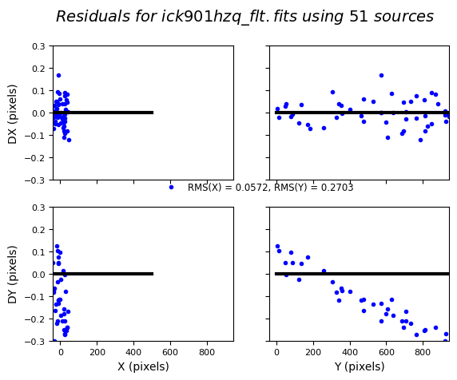
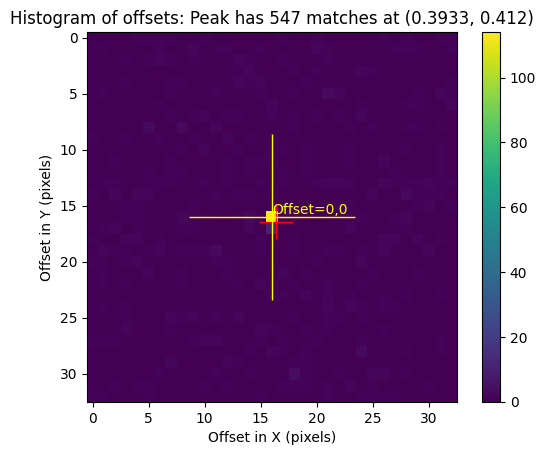
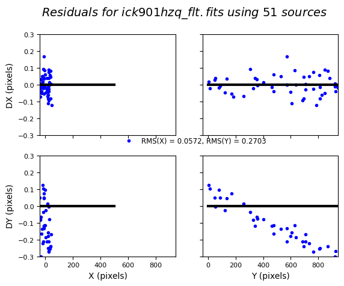
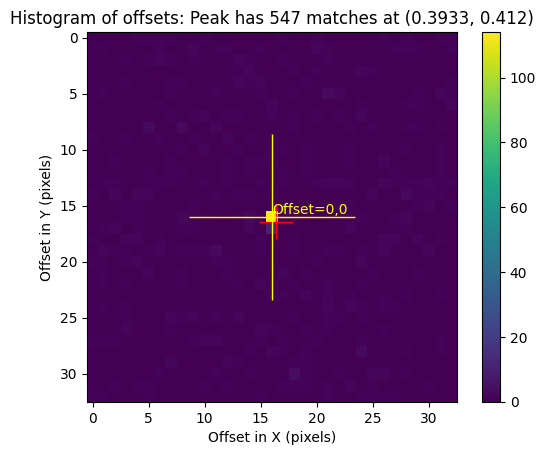

Aligning HST Mosaics
Contents
Aligning HST Mosaics#
Introduction#
This notebook demonstrates how to align and drizzle mosaicked tiles of the Eagle Nebula (M16) obtained with WFC3 with both UVIS and IR detectors. It is based on the example highlighted in the following WFC3 technical report: ISR 2015-09: Combining WFC3 Mosaics of M16 with DrizzlePac and highlights special features in DrizzlePac to improve mosaics.
In prior alignment tutorials, building up an aligned set of tiles required an iterative approach. Now, mosaic alignment can be achieved in a single step by building up an expanded reference catalog ‘on-the-fly’. New sky matching options make it easier to produce seamless mosaics, which can be challenging for extended sources with little or no blank sky.
from astroquery.mast import Observations
from ccdproc import ImageFileCollection
from astropy.table import Table
from astropy.io import fits
from astropy.io import ascii
from astropy.visualization import ZScaleInterval
from IPython.display import Image
import glob
import matplotlib.pyplot as plt
import numpy as np
import os
import shutil
from drizzlepac import tweakreg
from drizzlepac import astrodrizzle
The following task in the stsci.skypac package can be run with TEAL:
skymatch
The following tasks in the drizzlepac package can be run with TEAL:
astrodrizzle config_testbed imagefindpars mapreg
photeq pixreplace pixtopix pixtosky
refimagefindpars resetbits runastrodriz skytopix
tweakback tweakreg updatenpol
1. Observations#
Mosaics of the Eagle Nebula were acquired by HST GO/DD program 13926 in September 2014 for HST’s 25th Annivery. A 2x2 tile mosaic with the IR detector (~4 arcmin across) was observed in the F110W and F160W filters.
A slightly larger 2x2 mosaic with the UVIS detector (~5 arcmin across) was observed with the F502N, F657N, and F673N filters. Small dithers between exposures in a given tile will fill in the UVIS chip gap and allow for the rejection of cosmic rays and detector artifacts. More detail on the observing strategy may be found in the Phase II file.
Two additional UVIS tiles overlap the central portion of 2x2 mosaic in order to have very high signal-to-noise in the Eagle’s pillars. These two visits (09,10) were not included in this example for brevity. The data used in this notebook example is also limited to the IR/F160W filter (visits 01-04) and UVIS/F657N filters (visits 05-08), shown in the diagrams below.
IR Mosaic UVIS Mosaic UVIS(overlap) ____ ____ ____ ____ ____ | | | | | | | | | 02 | 01 | | 06 | 05 | | 09 | |____|____| |____|____| |____| | | | | | | | | | 04 | 03 | | 08 | 07 | | 10 | |____|____| |____|____| |____|
2. MAST Download#
In the steps below, the calibrated IR data (*_flt.fits) and the calibrated, CTE-corrected UVIS data (*_flc.fits) are retrieved from MAST and placed in the same directory as this notebook, along with the associated telemetry and engineering files (*_spt.fits).
# Retrieve the IR/F160W calibrated FLT and SPT data products
science_list = Observations.query_criteria(proposal_id='13926', filters='F160W')
Observations.download_products(science_list['obsid'], mrp_only=False, download_dir='./science',
productSubGroupDescription=['FLT', 'SPT'])
science_files = glob.glob(os.path.join(os.curdir, 'science', 'mastDownload', 'HST', '*', '*fits'))
for im in science_files:
root = im.split('/')[-1]
os.rename(im, './' + root)
shutil.rmtree('science/')
Downloading URL https://mast.stsci.edu/api/v0.1/Download/file?uri=mast:HST/product/hst_13926_02_wfc3_ir_f160w_ick902n9_flt.fits to ./science/mastDownload/HST/hst_13926_02_wfc3_ir_f160w_ick902n9/hst_13926_02_wfc3_ir_f160w_ick902n9_flt.fits ...
[Done]
Downloading URL https://mast.stsci.edu/api/v0.1/Download/file?uri=mast:HST/product/hst_13926_02_wfc3_ir_f160w_ick902ne_flt.fits to ./science/mastDownload/HST/hst_13926_02_wfc3_ir_f160w_ick902ne/hst_13926_02_wfc3_ir_f160w_ick902ne_flt.fits ...
[Done]
Downloading URL https://mast.stsci.edu/api/v0.1/Download/file?uri=mast:HST/product/ick902030_spt.fits to ./science/mastDownload/HST/ick902030/ick902030_spt.fits ...
[Done]
Downloading URL https://mast.stsci.edu/api/v0.1/Download/file?uri=mast:HST/product/ick902n9q_spt.fits to ./science/mastDownload/HST/ick902n9q/ick902n9q_spt.fits ...
[Done]
Downloading URL https://mast.stsci.edu/api/v0.1/Download/file?uri=mast:HST/product/ick902n9q_flt.fits to ./science/mastDownload/HST/ick902n9q/ick902n9q_flt.fits ...
[Done]
Downloading URL https://mast.stsci.edu/api/v0.1/Download/file?uri=mast:HST/product/ick902neq_spt.fits to ./science/mastDownload/HST/ick902neq/ick902neq_spt.fits ...
[Done]
Downloading URL https://mast.stsci.edu/api/v0.1/Download/file?uri=mast:HST/product/ick902neq_flt.fits to ./science/mastDownload/HST/ick902neq/ick902neq_flt.fits ...
[Done]
Downloading URL https://mast.stsci.edu/api/v0.1/Download/file?uri=mast:HST/product/hst_13926_01_wfc3_ir_f160w_ick901hz_flt.fits to ./science/mastDownload/HST/hst_13926_01_wfc3_ir_f160w_ick901hz/hst_13926_01_wfc3_ir_f160w_ick901hz_flt.fits ...
[Done]
Downloading URL https://mast.stsci.edu/api/v0.1/Download/file?uri=mast:HST/product/hst_13926_01_wfc3_ir_f160w_ick901i7_flt.fits to ./science/mastDownload/HST/hst_13926_01_wfc3_ir_f160w_ick901i7/hst_13926_01_wfc3_ir_f160w_ick901i7_flt.fits ...
[Done]
Downloading URL https://mast.stsci.edu/api/v0.1/Download/file?uri=mast:HST/product/ick901030_spt.fits to ./science/mastDownload/HST/ick901030/ick901030_spt.fits ...
[Done]
Downloading URL https://mast.stsci.edu/api/v0.1/Download/file?uri=mast:HST/product/ick901hzq_spt.fits to ./science/mastDownload/HST/ick901hzq/ick901hzq_spt.fits ...
[Done]
Downloading URL https://mast.stsci.edu/api/v0.1/Download/file?uri=mast:HST/product/ick901hzq_flt.fits to ./science/mastDownload/HST/ick901hzq/ick901hzq_flt.fits ...
[Done]
Downloading URL https://mast.stsci.edu/api/v0.1/Download/file?uri=mast:HST/product/ick901i7q_spt.fits to ./science/mastDownload/HST/ick901i7q/ick901i7q_spt.fits ...
[Done]
Downloading URL https://mast.stsci.edu/api/v0.1/Download/file?uri=mast:HST/product/ick901i7q_flt.fits to ./science/mastDownload/HST/ick901i7q/ick901i7q_flt.fits ...
[Done]
Downloading URL https://mast.stsci.edu/api/v0.1/Download/file?uri=mast:HST/product/hst_13926_04_wfc3_ir_f160w_ick904ob_flt.fits to ./science/mastDownload/HST/hst_13926_04_wfc3_ir_f160w_ick904ob/hst_13926_04_wfc3_ir_f160w_ick904ob_flt.fits ...
[Done]
Downloading URL https://mast.stsci.edu/api/v0.1/Download/file?uri=mast:HST/product/hst_13926_04_wfc3_ir_f160w_ick904og_flt.fits to ./science/mastDownload/HST/hst_13926_04_wfc3_ir_f160w_ick904og/hst_13926_04_wfc3_ir_f160w_ick904og_flt.fits ...
[Done]
Downloading URL https://mast.stsci.edu/api/v0.1/Download/file?uri=mast:HST/product/ick904030_spt.fits to ./science/mastDownload/HST/ick904030/ick904030_spt.fits ...
[Done]
Downloading URL https://mast.stsci.edu/api/v0.1/Download/file?uri=mast:HST/product/ick904obq_spt.fits to ./science/mastDownload/HST/ick904obq/ick904obq_spt.fits ...
[Done]
Downloading URL https://mast.stsci.edu/api/v0.1/Download/file?uri=mast:HST/product/ick904obq_flt.fits to ./science/mastDownload/HST/ick904obq/ick904obq_flt.fits ...
[Done]
Downloading URL https://mast.stsci.edu/api/v0.1/Download/file?uri=mast:HST/product/ick904ogq_spt.fits to ./science/mastDownload/HST/ick904ogq/ick904ogq_spt.fits ...
[Done]
Downloading URL https://mast.stsci.edu/api/v0.1/Download/file?uri=mast:HST/product/ick904ogq_flt.fits to ./science/mastDownload/HST/ick904ogq/ick904ogq_flt.fits ...
[Done]
Downloading URL https://mast.stsci.edu/api/v0.1/Download/file?uri=mast:HST/product/hst_13926_03_wfc3_ir_f160w_ick903n4_flt.fits to ./science/mastDownload/HST/hst_13926_03_wfc3_ir_f160w_ick903n4/hst_13926_03_wfc3_ir_f160w_ick903n4_flt.fits ...
[Done]
Downloading URL https://mast.stsci.edu/api/v0.1/Download/file?uri=mast:HST/product/hst_13926_03_wfc3_ir_f160w_ick903nc_flt.fits to ./science/mastDownload/HST/hst_13926_03_wfc3_ir_f160w_ick903nc/hst_13926_03_wfc3_ir_f160w_ick903nc_flt.fits ...
[Done]
Downloading URL https://mast.stsci.edu/api/v0.1/Download/file?uri=mast:HST/product/ick903030_spt.fits to ./science/mastDownload/HST/ick903030/ick903030_spt.fits ...
[Done]
Downloading URL https://mast.stsci.edu/api/v0.1/Download/file?uri=mast:HST/product/ick903n4q_spt.fits to ./science/mastDownload/HST/ick903n4q/ick903n4q_spt.fits ...
[Done]
Downloading URL https://mast.stsci.edu/api/v0.1/Download/file?uri=mast:HST/product/ick903n4q_flt.fits to ./science/mastDownload/HST/ick903n4q/ick903n4q_flt.fits ...
[Done]
Downloading URL https://mast.stsci.edu/api/v0.1/Download/file?uri=mast:HST/product/ick903ncq_spt.fits to ./science/mastDownload/HST/ick903ncq/ick903ncq_spt.fits ...
[Done]
Downloading URL https://mast.stsci.edu/api/v0.1/Download/file?uri=mast:HST/product/ick903ncq_flt.fits to ./science/mastDownload/HST/ick903ncq/ick903ncq_flt.fits ...
[Done]
INFO: Found cached file ./science/mastDownload/HST/hst_13926_04_wfc3_ir_f160w_ick904ob/hst_13926_04_wfc3_ir_f160w_ick904ob_flt.fits with expected size 16646400. [astroquery.query]
INFO: Found cached file ./science/mastDownload/HST/hst_13926_04_wfc3_ir_f160w_ick904og/hst_13926_04_wfc3_ir_f160w_ick904og_flt.fits with expected size 16646400. [astroquery.query]
INFO: Found cached file ./science/mastDownload/HST/ick904030/ick904030_spt.fits with expected size 2424960. [astroquery.query]
INFO: Found cached file ./science/mastDownload/HST/ick904obq/ick904obq_spt.fits with expected size 1226880. [astroquery.query]
INFO: Found cached file ./science/mastDownload/HST/ick904obq/ick904obq_flt.fits with expected size 16634880. [astroquery.query]
INFO: Found cached file ./science/mastDownload/HST/ick904ogq/ick904ogq_spt.fits with expected size 1226880. [astroquery.query]
INFO: Found cached file ./science/mastDownload/HST/ick904ogq/ick904ogq_flt.fits with expected size 16634880. [astroquery.query]
INFO: Found cached file ./science/mastDownload/HST/hst_13926_03_wfc3_ir_f160w_ick903n4/hst_13926_03_wfc3_ir_f160w_ick903n4_flt.fits with expected size 16646400. [astroquery.query]
INFO: Found cached file ./science/mastDownload/HST/hst_13926_03_wfc3_ir_f160w_ick903nc/hst_13926_03_wfc3_ir_f160w_ick903nc_flt.fits with expected size 16646400. [astroquery.query]
INFO: Found cached file ./science/mastDownload/HST/ick903030/ick903030_spt.fits with expected size 2424960. [astroquery.query]
INFO: Found cached file ./science/mastDownload/HST/ick903n4q/ick903n4q_spt.fits with expected size 1226880. [astroquery.query]
INFO: Found cached file ./science/mastDownload/HST/ick903n4q/ick903n4q_flt.fits with expected size 16634880. [astroquery.query]
INFO: Found cached file ./science/mastDownload/HST/ick903ncq/ick903ncq_spt.fits with expected size 1226880. [astroquery.query]
INFO: Found cached file ./science/mastDownload/HST/ick903ncq/ick903ncq_flt.fits with expected size 16634880. [astroquery.query]
INFO: Found cached file ./science/mastDownload/HST/hst_13926_02_wfc3_ir_f160w_ick902n9/hst_13926_02_wfc3_ir_f160w_ick902n9_flt.fits with expected size 16634880. [astroquery.query]
INFO: Found cached file ./science/mastDownload/HST/hst_13926_02_wfc3_ir_f160w_ick902ne/hst_13926_02_wfc3_ir_f160w_ick902ne_flt.fits with expected size 16634880. [astroquery.query]
INFO: Found cached file ./science/mastDownload/HST/ick902030/ick902030_spt.fits with expected size 2424960. [astroquery.query]
INFO: Found cached file ./science/mastDownload/HST/ick902n9q/ick902n9q_spt.fits with expected size 1226880. [astroquery.query]
INFO: Found cached file ./science/mastDownload/HST/ick902n9q/ick902n9q_flt.fits with expected size 16623360. [astroquery.query]
INFO: Found cached file ./science/mastDownload/HST/ick902neq/ick902neq_spt.fits with expected size 1226880. [astroquery.query]
INFO: Found cached file ./science/mastDownload/HST/ick902neq/ick902neq_flt.fits with expected size 16623360. [astroquery.query]
INFO: Found cached file ./science/mastDownload/HST/hst_13926_01_wfc3_ir_f160w_ick901hz/hst_13926_01_wfc3_ir_f160w_ick901hz_flt.fits with expected size 16646400. [astroquery.query]
INFO: Found cached file ./science/mastDownload/HST/hst_13926_01_wfc3_ir_f160w_ick901i7/hst_13926_01_wfc3_ir_f160w_ick901i7_flt.fits with expected size 16646400. [astroquery.query]
INFO: Found cached file ./science/mastDownload/HST/ick901030/ick901030_spt.fits with expected size 2424960. [astroquery.query]
INFO: Found cached file ./science/mastDownload/HST/ick901hzq/ick901hzq_spt.fits with expected size 1226880. [astroquery.query]
INFO: Found cached file ./science/mastDownload/HST/ick901hzq/ick901hzq_flt.fits with expected size 16634880. [astroquery.query]
INFO: Found cached file ./science/mastDownload/HST/ick901i7q/ick901i7q_spt.fits with expected size 1226880. [astroquery.query]
INFO: Found cached file ./science/mastDownload/HST/ick901i7q/ick901i7q_flt.fits with expected size 16634880. [astroquery.query]
# Obtain the UVIS/F657N calibrated FLC and SPT data products from visits 05-08
science_list = Observations.query_criteria(proposal_id='13926', filters='F657N', obs_id='ICK90[5678]*')
Observations.download_products(science_list['obsid'], mrp_only=False, download_dir='./science',
productSubGroupDescription=['FLC', 'SPT'])
science_files = glob.glob(os.path.join(os.curdir, 'science', 'mastDownload', 'HST', '*', '*fits'))
for im in science_files:
root = im.split('/')[-1]
os.rename(im, './' + root)
shutil.rmtree('science/')
Downloading URL https://mast.stsci.edu/api/v0.1/Download/file?uri=mast:HST/product/hst_13926_05_wfc3_uvis_f657n_ick905k5_flc.fits to ./science/mastDownload/HST/hst_13926_05_wfc3_uvis_f657n_ick905k5/hst_13926_05_wfc3_uvis_f657n_ick905k5_flc.fits ...
[Done]
Downloading URL https://mast.stsci.edu/api/v0.1/Download/file?uri=mast:HST/product/hst_13926_05_wfc3_uvis_f657n_ick905ke_flc.fits to ./science/mastDownload/HST/hst_13926_05_wfc3_uvis_f657n_ick905ke/hst_13926_05_wfc3_uvis_f657n_ick905ke_flc.fits ...
[Done]
Downloading URL https://mast.stsci.edu/api/v0.1/Download/file?uri=mast:HST/product/hst_13926_05_wfc3_uvis_f657n_ick905kn_flc.fits to ./science/mastDownload/HST/hst_13926_05_wfc3_uvis_f657n_ick905kn/hst_13926_05_wfc3_uvis_f657n_ick905kn_flc.fits ...
[Done]
Downloading URL https://mast.stsci.edu/api/v0.1/Download/file?uri=mast:HST/product/ick905040_spt.fits to ./science/mastDownload/HST/ick905040/ick905040_spt.fits ...
[Done]
Downloading URL https://mast.stsci.edu/api/v0.1/Download/file?uri=mast:HST/product/ick905k5q_spt.fits to ./science/mastDownload/HST/ick905k5q/ick905k5q_spt.fits ...
[Done]
Downloading URL https://mast.stsci.edu/api/v0.1/Download/file?uri=mast:HST/product/ick905k5q_flc.fits to ./science/mastDownload/HST/ick905k5q/ick905k5q_flc.fits ...
[Done]
Downloading URL https://mast.stsci.edu/api/v0.1/Download/file?uri=mast:HST/product/ick905keq_spt.fits to ./science/mastDownload/HST/ick905keq/ick905keq_spt.fits ...
[Done]
Downloading URL https://mast.stsci.edu/api/v0.1/Download/file?uri=mast:HST/product/ick905keq_flc.fits to ./science/mastDownload/HST/ick905keq/ick905keq_flc.fits ...
[Done]
Downloading URL https://mast.stsci.edu/api/v0.1/Download/file?uri=mast:HST/product/ick905knq_spt.fits to ./science/mastDownload/HST/ick905knq/ick905knq_spt.fits ...
[Done]
Downloading URL https://mast.stsci.edu/api/v0.1/Download/file?uri=mast:HST/product/ick905knq_flc.fits to ./science/mastDownload/HST/ick905knq/ick905knq_flc.fits ...
[Done]
Downloading URL https://mast.stsci.edu/api/v0.1/Download/file?uri=mast:HST/product/hst_13926_08_wfc3_uvis_f657n_ick908pb_flc.fits to ./science/mastDownload/HST/hst_13926_08_wfc3_uvis_f657n_ick908pb/hst_13926_08_wfc3_uvis_f657n_ick908pb_flc.fits ...
[Done]
Downloading URL https://mast.stsci.edu/api/v0.1/Download/file?uri=mast:HST/product/hst_13926_08_wfc3_uvis_f657n_ick908pk_flc.fits to ./science/mastDownload/HST/hst_13926_08_wfc3_uvis_f657n_ick908pk/hst_13926_08_wfc3_uvis_f657n_ick908pk_flc.fits ...
[Done]
Downloading URL https://mast.stsci.edu/api/v0.1/Download/file?uri=mast:HST/product/hst_13926_08_wfc3_uvis_f657n_ick908pt_flc.fits to ./science/mastDownload/HST/hst_13926_08_wfc3_uvis_f657n_ick908pt/hst_13926_08_wfc3_uvis_f657n_ick908pt_flc.fits ...
[Done]
Downloading URL https://mast.stsci.edu/api/v0.1/Download/file?uri=mast:HST/product/ick908040_spt.fits to ./science/mastDownload/HST/ick908040/ick908040_spt.fits ...
[Done]
Downloading URL https://mast.stsci.edu/api/v0.1/Download/file?uri=mast:HST/product/ick908pbq_spt.fits to ./science/mastDownload/HST/ick908pbq/ick908pbq_spt.fits ...
[Done]
Downloading URL https://mast.stsci.edu/api/v0.1/Download/file?uri=mast:HST/product/ick908pbq_flc.fits to ./science/mastDownload/HST/ick908pbq/ick908pbq_flc.fits ...
[Done]
Downloading URL https://mast.stsci.edu/api/v0.1/Download/file?uri=mast:HST/product/ick908pkq_spt.fits to ./science/mastDownload/HST/ick908pkq/ick908pkq_spt.fits ...
[Done]
Downloading URL https://mast.stsci.edu/api/v0.1/Download/file?uri=mast:HST/product/ick908pkq_flc.fits to ./science/mastDownload/HST/ick908pkq/ick908pkq_flc.fits ...
[Done]
Downloading URL https://mast.stsci.edu/api/v0.1/Download/file?uri=mast:HST/product/ick908ptq_spt.fits to ./science/mastDownload/HST/ick908ptq/ick908ptq_spt.fits ...
[Done]
Downloading URL https://mast.stsci.edu/api/v0.1/Download/file?uri=mast:HST/product/ick908ptq_flc.fits to ./science/mastDownload/HST/ick908ptq/ick908ptq_flc.fits ...
[Done]
Downloading URL https://mast.stsci.edu/api/v0.1/Download/file?uri=mast:HST/product/hst_13926_07_wfc3_uvis_f657n_ick907nk_flc.fits to ./science/mastDownload/HST/hst_13926_07_wfc3_uvis_f657n_ick907nk/hst_13926_07_wfc3_uvis_f657n_ick907nk_flc.fits ...
[Done]
Downloading URL https://mast.stsci.edu/api/v0.1/Download/file?uri=mast:HST/product/hst_13926_07_wfc3_uvis_f657n_ick907o1_flc.fits to ./science/mastDownload/HST/hst_13926_07_wfc3_uvis_f657n_ick907o1/hst_13926_07_wfc3_uvis_f657n_ick907o1_flc.fits ...
[Done]
Downloading URL https://mast.stsci.edu/api/v0.1/Download/file?uri=mast:HST/product/hst_13926_07_wfc3_uvis_f657n_ick907ou_flc.fits to ./science/mastDownload/HST/hst_13926_07_wfc3_uvis_f657n_ick907ou/hst_13926_07_wfc3_uvis_f657n_ick907ou_flc.fits ...
[Done]
Downloading URL https://mast.stsci.edu/api/v0.1/Download/file?uri=mast:HST/product/ick907040_spt.fits to ./science/mastDownload/HST/ick907040/ick907040_spt.fits ...
[Done]
Downloading URL https://mast.stsci.edu/api/v0.1/Download/file?uri=mast:HST/product/ick907nkq_spt.fits to ./science/mastDownload/HST/ick907nkq/ick907nkq_spt.fits ...
[Done]
Downloading URL https://mast.stsci.edu/api/v0.1/Download/file?uri=mast:HST/product/ick907nkq_flc.fits to ./science/mastDownload/HST/ick907nkq/ick907nkq_flc.fits ...
[Done]
Downloading URL https://mast.stsci.edu/api/v0.1/Download/file?uri=mast:HST/product/ick907o1q_spt.fits to ./science/mastDownload/HST/ick907o1q/ick907o1q_spt.fits ...
[Done]
Downloading URL https://mast.stsci.edu/api/v0.1/Download/file?uri=mast:HST/product/ick907o1q_flc.fits to ./science/mastDownload/HST/ick907o1q/ick907o1q_flc.fits ...
[Done]
Downloading URL https://mast.stsci.edu/api/v0.1/Download/file?uri=mast:HST/product/ick907ouq_spt.fits to ./science/mastDownload/HST/ick907ouq/ick907ouq_spt.fits ...
[Done]
Downloading URL https://mast.stsci.edu/api/v0.1/Download/file?uri=mast:HST/product/ick907ouq_flc.fits to ./science/mastDownload/HST/ick907ouq/ick907ouq_flc.fits ...
[Done]
Downloading URL https://mast.stsci.edu/api/v0.1/Download/file?uri=mast:HST/product/hst_13926_06_wfc3_uvis_f657n_ick906kw_flc.fits to ./science/mastDownload/HST/hst_13926_06_wfc3_uvis_f657n_ick906kw/hst_13926_06_wfc3_uvis_f657n_ick906kw_flc.fits ...
[Done]
Downloading URL https://mast.stsci.edu/api/v0.1/Download/file?uri=mast:HST/product/hst_13926_06_wfc3_uvis_f657n_ick906l5_flc.fits to ./science/mastDownload/HST/hst_13926_06_wfc3_uvis_f657n_ick906l5/hst_13926_06_wfc3_uvis_f657n_ick906l5_flc.fits ...
[Done]
Downloading URL https://mast.stsci.edu/api/v0.1/Download/file?uri=mast:HST/product/hst_13926_06_wfc3_uvis_f657n_ick906le_flc.fits to ./science/mastDownload/HST/hst_13926_06_wfc3_uvis_f657n_ick906le/hst_13926_06_wfc3_uvis_f657n_ick906le_flc.fits ...
[Done]
Downloading URL https://mast.stsci.edu/api/v0.1/Download/file?uri=mast:HST/product/ick906040_spt.fits to ./science/mastDownload/HST/ick906040/ick906040_spt.fits ...
[Done]
Downloading URL https://mast.stsci.edu/api/v0.1/Download/file?uri=mast:HST/product/ick906kwq_spt.fits to ./science/mastDownload/HST/ick906kwq/ick906kwq_spt.fits ...
[Done]
Downloading URL https://mast.stsci.edu/api/v0.1/Download/file?uri=mast:HST/product/ick906kwq_flc.fits to ./science/mastDownload/HST/ick906kwq/ick906kwq_flc.fits ...
[Done]
Downloading URL https://mast.stsci.edu/api/v0.1/Download/file?uri=mast:HST/product/ick906l5q_spt.fits to ./science/mastDownload/HST/ick906l5q/ick906l5q_spt.fits ...
[Done]
Downloading URL https://mast.stsci.edu/api/v0.1/Download/file?uri=mast:HST/product/ick906l5q_flc.fits to ./science/mastDownload/HST/ick906l5q/ick906l5q_flc.fits ...
[Done]
Downloading URL https://mast.stsci.edu/api/v0.1/Download/file?uri=mast:HST/product/ick906leq_spt.fits to ./science/mastDownload/HST/ick906leq/ick906leq_spt.fits ...
[Done]
Downloading URL https://mast.stsci.edu/api/v0.1/Download/file?uri=mast:HST/product/ick906leq_flc.fits to ./science/mastDownload/HST/ick906leq/ick906leq_flc.fits ...
[Done]
3. Dithers#
3a. IR detector#
IR exposures were obtained in Visits 01-04. (The visit ID is found in the 5th and 6th character of the filename). Each visit (mosaic tile) consists of a pair of exposures using the WFC3-IR-DITHER-BLOB dither of 7.2” along the y-axis (pattern_orient=90 degrees). This dither can be seen when comparing the POSTARG2 keyword between pairs of exposures in a given visit in the table below.
Pairs of IR exposures making up each visit are referred to as v01a and v01b in this notebook. The first four images listed in the table below are associated with v01a and the last four with v01b.
collect_ir = ImageFileCollection('./', glob_include="*flt.fits", ext=0,
keywords=["asn_id", "detector", "filter", "nsamp",
"exptime", "postarg1", "postarg2"])
ir_table = collect_ir.summary
ir_table['exptime'].format = '7.1f'
ir_table['postarg1'].format = '7.2f'
ir_table['postarg2'].format = '7.2f'
ir_table
| file | asn_id | detector | filter | nsamp | exptime | postarg1 | postarg2 |
|---|---|---|---|---|---|---|---|
| str44 | str9 | str2 | str5 | int64 | float64 | float64 | float64 |
| hst_13926_01_wfc3_ir_f160w_ick901hz_flt.fits | ICK901030 | IR | F160W | 16 | 702.9 | -62.57 | -62.05 |
| hst_13926_01_wfc3_ir_f160w_ick901i7_flt.fits | ICK901030 | IR | F160W | 16 | 702.9 | -62.57 | -54.85 |
| hst_13926_02_wfc3_ir_f160w_ick902n9_flt.fits | ICK902030 | IR | F160W | 16 | 702.9 | 62.57 | -62.05 |
| hst_13926_02_wfc3_ir_f160w_ick902ne_flt.fits | ICK902030 | IR | F160W | 16 | 702.9 | 62.57 | -54.85 |
| hst_13926_03_wfc3_ir_f160w_ick903n4_flt.fits | ICK903030 | IR | F160W | 16 | 702.9 | -62.57 | 54.85 |
| hst_13926_03_wfc3_ir_f160w_ick903nc_flt.fits | ICK903030 | IR | F160W | 16 | 702.9 | -62.57 | 62.05 |
| hst_13926_04_wfc3_ir_f160w_ick904ob_flt.fits | ICK904030 | IR | F160W | 16 | 702.9 | 62.57 | 54.85 |
| hst_13926_04_wfc3_ir_f160w_ick904og_flt.fits | ICK904030 | IR | F160W | 16 | 702.9 | 62.57 | 62.05 |
| ick901hzq_flt.fits | ICK901030 | IR | F160W | 16 | 702.9 | -62.57 | -62.05 |
| ick901i7q_flt.fits | ICK901030 | IR | F160W | 16 | 702.9 | -62.57 | -54.85 |
| ick902n9q_flt.fits | ICK902030 | IR | F160W | 16 | 702.9 | 62.57 | -62.05 |
| ick902neq_flt.fits | ICK902030 | IR | F160W | 16 | 702.9 | 62.57 | -54.85 |
| ick903n4q_flt.fits | ICK903030 | IR | F160W | 16 | 702.9 | -62.57 | 54.85 |
| ick903ncq_flt.fits | ICK903030 | IR | F160W | 16 | 702.9 | -62.57 | 62.05 |
| ick904obq_flt.fits | ICK904030 | IR | F160W | 16 | 702.9 | 62.57 | 54.85 |
| ick904ogq_flt.fits | ICK904030 | IR | F160W | 16 | 702.9 | 62.57 | 62.05 |
3b. UVIS detector#
UVIS exposures were acquired in Visits 05-08. Each UVIS visit (tile) consists of a set of 3 dithered exposures using the WFC3-UVIS-MOSAIC-LINE pattern, with an offset ~12” along a 65 degree diagonal. This dither can be seen in the POSTARG1, POSTARG2 offsets which are ~5” in X and ~10” in Y between exposures in a given visit.
Sets of three exposures making up each UVIS visit are referred to as v05a, v05b, v05c in this notebook.
collect_uvis = ImageFileCollection('./', glob_include="*flc.fits", ext=0,
keywords=["asn_id", "detector", "filter", "exptime", "postarg1", "postarg2"])
uvis_table = collect_uvis.summary
uvis_table['exptime'].format = '7.1f'
uvis_table['postarg1'].format = '7.2f'
uvis_table['postarg2'].format = '7.2f'
uvis_table
| file | asn_id | detector | filter | exptime | postarg1 | postarg2 |
|---|---|---|---|---|---|---|
| str46 | str9 | str4 | str5 | float64 | float64 | float64 |
| hst_13926_05_wfc3_uvis_f657n_ick905k5_flc.fits | ICK905040 | UVIS | F657N | 600.0 | -65.38 | -74.27 |
| hst_13926_05_wfc3_uvis_f657n_ick905ke_flc.fits | ICK905040 | UVIS | F657N | 600.0 | -60.31 | -63.40 |
| hst_13926_05_wfc3_uvis_f657n_ick905kn_flc.fits | ICK905040 | UVIS | F657N | 600.0 | -55.24 | -52.52 |
| hst_13926_06_wfc3_uvis_f657n_ick906kw_flc.fits | ICK906040 | UVIS | F657N | 600.0 | 65.38 | -65.13 |
| hst_13926_06_wfc3_uvis_f657n_ick906l5_flc.fits | ICK906040 | UVIS | F657N | 600.0 | 70.46 | -54.25 |
| hst_13926_06_wfc3_uvis_f657n_ick906le_flc.fits | ICK906040 | UVIS | F657N | 600.0 | 75.53 | -43.38 |
| hst_13926_07_wfc3_uvis_f657n_ick907nk_flc.fits | ICK907040 | UVIS | F657N | 600.0 | -65.38 | 65.13 |
| hst_13926_07_wfc3_uvis_f657n_ick907o1_flc.fits | ICK907040 | UVIS | F657N | 600.0 | -60.31 | 76.00 |
| hst_13926_07_wfc3_uvis_f657n_ick907ou_flc.fits | ICK907040 | UVIS | F657N | 600.0 | -55.24 | 86.88 |
| hst_13926_08_wfc3_uvis_f657n_ick908pb_flc.fits | ICK908040 | UVIS | F657N | 600.0 | 65.38 | 74.27 |
| ... | ... | ... | ... | ... | ... | ... |
| ick905knq_flc.fits | ICK905040 | UVIS | F657N | 600.0 | -55.24 | -52.52 |
| ick906kwq_flc.fits | ICK906040 | UVIS | F657N | 600.0 | 65.38 | -65.13 |
| ick906l5q_flc.fits | ICK906040 | UVIS | F657N | 600.0 | 70.46 | -54.25 |
| ick906leq_flc.fits | ICK906040 | UVIS | F657N | 600.0 | 75.53 | -43.38 |
| ick907nkq_flc.fits | ICK907040 | UVIS | F657N | 600.0 | -65.38 | 65.13 |
| ick907o1q_flc.fits | ICK907040 | UVIS | F657N | 600.0 | -60.31 | 76.00 |
| ick907ouq_flc.fits | ICK907040 | UVIS | F657N | 600.0 | -55.24 | 86.88 |
| ick908pbq_flc.fits | ICK908040 | UVIS | F657N | 600.0 | 65.38 | 74.27 |
| ick908pkq_flc.fits | ICK908040 | UVIS | F657N | 600.0 | 70.46 | 85.15 |
| ick908ptq_flc.fits | ICK908040 | UVIS | F657N | 600.0 | 75.53 | 96.02 |
4. TweakReg for Mosaics#
Before combining observations with AstroDrizzle, the WCS keywords in the header of each input frame
should be aligned to sub-pixel accuracy. This may be achieved with TweakReg, which allows users to align sets of images to one another or to an external astrometric reference frame. TweakReg has been enhanced to support the alignment of observations that cover a large area on the sky. Making use of the expand_refcat parameter, TweakReg will build up an expanded reference catalog on the sky to be used for alignment. When set to ‘True’, TweakReg selects two images from the input list with the largest overlap on the sky, generates source catalogs for each image, and computes a fit (shift, rotation, and/or scale change) from the matched source list.
Next, the algorithm computes the area of overlap of each of these two images with the rest of the input images, and the one with the largest total overlap on the sky is selected as the reference image. Sources from the second image that have not been matched to the reference image catalog are considered good new sources and are added to the reference catalog. In this way, the reference catalog keeps expanding with each new matched image. With a large (expanded) reference catalog it is therefore possible to align images that had no direct overlap with the starting image.
4a. IR Alignment#
For this large multi-filter dataset, the user should carefully consider which observations to align and combine first. These will serve as a reference image for aligning additional filters. The broadband IR images of M16 contain a large number of stars distributed uniformly over the field of view. The UVIS frames, on the other hand, are largely devoid of point sources and full of cosmic-rays which can trip up TweakReg when trying to compute a fit. Even though the IR detector has a smaller footprint on the sky and the IR PSF is more undersampled, the high density of stars makes it a better anchor for aligning the UVIS tiles.
Of the two IR filters, F160W has the largest number of point sources and therefore makes a good choice for the reference image. To generate source lists for matching, the TweakReg parameter conv_width should be set to approximately twice the FWHM of the PSF, ~2.5 pixels for IR observations and ~3.5 pixels for UVIS observations. TweakReg will automatically compute the standard deviation of the sky background (skysigma), so the number of sources in each catalog may be controlled simply by changing the ‘threshold’ parameter.
In this example, TweakReg is run in ‘non-interactive’ mode (interactive='False') so that the astrometric fit residuals and vectors diagrams will be saved as png files in the user’s local directory for inspection. Once the parameters have been fine-tuned and the fit looks adequate, users may run TweakReg a second time (see below) to update the image header WCS keywords by setting the parameter updatehdr to True.
tweakreg.TweakReg('*flt.fits',
imagefindcfg={'threshold': 50, 'conv_width': 2.5},
expand_refcat=True,
enforce_user_order=False,
shiftfile=True,
outshifts='shift160_flt.txt',
searchrad=2.0,
ylimit=0.3,
updatehdr=True,
reusename=True,
wcsname='IR_FLT',
interactive=False)
INFO:drizzlepac.util:Setting up logfile : tweakreg.log
Setting up logfile : tweakreg.log
INFO:drizzlepac.tweakreg:TweakReg Version 3.5.0 started at: 15:26:41.099 (25/10/2022)
TweakReg Version 3.5.0 started at: 15:26:41.099 (25/10/2022)
INFO:drizzlepac.tweakreg:
INFO:drizzlepac.util:Version Information
Version Information
INFO:drizzlepac.util:--------------------
--------------------
INFO:drizzlepac.util:Python Version [GCC 7.5.0]
Python Version [GCC 7.5.0]
INFO:drizzlepac.util:3.9.12 (main, Apr 5 2022, 06:56:58)
3.9.12 (main, Apr 5 2022, 06:56:58)
INFO:drizzlepac.util:numpy Version -> 1.23.4
numpy Version -> 1.23.4
INFO:drizzlepac.util:astropy Version -> 5.1.1
astropy Version -> 5.1.1
INFO:drizzlepac.util:stwcs Version -> 1.7.2
stwcs Version -> 1.7.2
INFO:drizzlepac.tweakreg:
INFO:drizzlepac.tweakreg:USER INPUT PARAMETERS common to all Processing Steps:
INFO:drizzlepac.tweakreg: clean : False
INFO:drizzlepac.tweakreg: enforce_user_order : False
INFO:drizzlepac.tweakreg: exclusions :
INFO:drizzlepac.tweakreg: expand_refcat : True
INFO:drizzlepac.tweakreg: input : *flt.fits
INFO:drizzlepac.tweakreg: interactive : False
INFO:drizzlepac.tweakreg: refimage :
INFO:drizzlepac.tweakreg: runfile : tweakreg.log
INFO:drizzlepac.tweakreg: updatewcs : False
INFO:drizzlepac.tweakreg: verbose : False
INFO:drizzlepac.tweakreg: writecat : True
INFO:drizzlepac.tweakreg:
INFO:drizzlepac.tweakreg:Finding shifts for:
Finding shifts for:
INFO:drizzlepac.tweakreg: hst_13926_01_wfc3_ir_f160w_ick901hz_flt.fits
hst_13926_01_wfc3_ir_f160w_ick901hz_flt.fits
INFO:drizzlepac.tweakreg: hst_13926_01_wfc3_ir_f160w_ick901i7_flt.fits
hst_13926_01_wfc3_ir_f160w_ick901i7_flt.fits
INFO:drizzlepac.tweakreg: hst_13926_02_wfc3_ir_f160w_ick902n9_flt.fits
hst_13926_02_wfc3_ir_f160w_ick902n9_flt.fits
INFO:drizzlepac.tweakreg: hst_13926_02_wfc3_ir_f160w_ick902ne_flt.fits
hst_13926_02_wfc3_ir_f160w_ick902ne_flt.fits
INFO:drizzlepac.tweakreg: hst_13926_03_wfc3_ir_f160w_ick903n4_flt.fits
hst_13926_03_wfc3_ir_f160w_ick903n4_flt.fits
INFO:drizzlepac.tweakreg: hst_13926_03_wfc3_ir_f160w_ick903nc_flt.fits
hst_13926_03_wfc3_ir_f160w_ick903nc_flt.fits
INFO:drizzlepac.tweakreg: hst_13926_04_wfc3_ir_f160w_ick904ob_flt.fits
hst_13926_04_wfc3_ir_f160w_ick904ob_flt.fits
INFO:drizzlepac.tweakreg: hst_13926_04_wfc3_ir_f160w_ick904og_flt.fits
hst_13926_04_wfc3_ir_f160w_ick904og_flt.fits
INFO:drizzlepac.tweakreg: ick901hzq_flt.fits
ick901hzq_flt.fits
INFO:drizzlepac.tweakreg: ick901i7q_flt.fits
ick901i7q_flt.fits
INFO:drizzlepac.tweakreg: ick902n9q_flt.fits
ick902n9q_flt.fits
INFO:drizzlepac.tweakreg: ick902neq_flt.fits
ick902neq_flt.fits
INFO:drizzlepac.tweakreg: ick903n4q_flt.fits
ick903n4q_flt.fits
INFO:drizzlepac.tweakreg: ick903ncq_flt.fits
ick903ncq_flt.fits
INFO:drizzlepac.tweakreg: ick904obq_flt.fits
ick904obq_flt.fits
INFO:drizzlepac.tweakreg: ick904ogq_flt.fits
ick904ogq_flt.fits
INFO:drizzlepac.tweakreg:
INFO:drizzlepac.tweakreg:USER INPUT PARAMETERS for finding sources for each input image:
INFO:drizzlepac.tweakreg: clean : False
INFO:drizzlepac.tweakreg: computesig : True
INFO:drizzlepac.tweakreg: conv_width : 2.5
INFO:drizzlepac.tweakreg: dqbits :
INFO:drizzlepac.tweakreg: enforce_user_order : False
INFO:drizzlepac.tweakreg: expand_refcat : True
INFO:drizzlepac.tweakreg: fluxmax : None
INFO:drizzlepac.tweakreg: fluxmin : None
INFO:drizzlepac.tweakreg: input : *flt.fits
INFO:drizzlepac.tweakreg: interactive : False
INFO:drizzlepac.tweakreg: nsigma : 1.5
INFO:drizzlepac.tweakreg: peakmax : None
INFO:drizzlepac.tweakreg: peakmin : None
INFO:drizzlepac.tweakreg: ratio : 1.0
INFO:drizzlepac.tweakreg: refimage :
INFO:drizzlepac.tweakreg: roundhi : 1.0
INFO:drizzlepac.tweakreg: roundlo : -1.0
INFO:drizzlepac.tweakreg: runfile : tweakreg.log
INFO:drizzlepac.tweakreg: sharphi : 1.0
INFO:drizzlepac.tweakreg: sharplo : 0.2
INFO:drizzlepac.tweakreg: skysigma : 0.0
INFO:drizzlepac.tweakreg: theta : 0.0
INFO:drizzlepac.tweakreg: threshold : 50
INFO:drizzlepac.tweakreg: updatehdr : True
INFO:drizzlepac.tweakreg: updatewcs : False
INFO:drizzlepac.tweakreg: use_sharp_round : False
INFO:drizzlepac.tweakreg: verbose : False
INFO:drizzlepac.tweakreg: writecat : True
INFO:drizzlepac.tweakreg: xyunits : pixels
INFO:drizzlepac.tweakreg:
INFO:drizzlepac.imgclasses:=== Source finding for image 'hst_13926_01_wfc3_ir_f160w_ick901hz_flt.fits':
=== Source finding for image 'hst_13926_01_wfc3_ir_f160w_ick901hz_flt.fits':
INFO:drizzlepac.catalogs: # Source finding for 'hst_13926_01_wfc3_ir_f160w_ick901hz_flt.fits', EXT=('SCI', 1) started at: 15:26:42.025 (25/10/2022)
# Source finding for 'hst_13926_01_wfc3_ir_f160w_ick901hz_flt.fits', EXT=('SCI', 1) started at: 15:26:42.025 (25/10/2022)
INFO:drizzlepac.catalogs: Finding sources using sky sigma = 3.029214
INFO:drizzlepac.catalogs:###Source finding finished at: 15:26:42.12 (25/10/2022)
INFO:drizzlepac.catalogs: Found 545 objects.
Found 545 objects.
INFO:drizzlepac.imgclasses:=== FINAL number of objects in image 'hst_13926_01_wfc3_ir_f160w_ick901hz_flt.fits': 545
=== FINAL number of objects in image 'hst_13926_01_wfc3_ir_f160w_ick901hz_flt.fits': 545
INFO:drizzlepac.imgclasses:
INFO:drizzlepac.imgclasses:=== Source finding for image 'hst_13926_01_wfc3_ir_f160w_ick901i7_flt.fits':
=== Source finding for image 'hst_13926_01_wfc3_ir_f160w_ick901i7_flt.fits':
INFO:drizzlepac.catalogs: # Source finding for 'hst_13926_01_wfc3_ir_f160w_ick901i7_flt.fits', EXT=('SCI', 1) started at: 15:26:42.278 (25/10/2022)
# Source finding for 'hst_13926_01_wfc3_ir_f160w_ick901i7_flt.fits', EXT=('SCI', 1) started at: 15:26:42.278 (25/10/2022)
INFO:drizzlepac.catalogs: Finding sources using sky sigma = 3.042417
INFO:drizzlepac.catalogs:###Source finding finished at: 15:26:42.369 (25/10/2022)
INFO:drizzlepac.catalogs: Found 524 objects.
Found 524 objects.
INFO:drizzlepac.imgclasses:=== FINAL number of objects in image 'hst_13926_01_wfc3_ir_f160w_ick901i7_flt.fits': 524
=== FINAL number of objects in image 'hst_13926_01_wfc3_ir_f160w_ick901i7_flt.fits': 524
INFO:drizzlepac.imgclasses:
INFO:drizzlepac.imgclasses:=== Source finding for image 'hst_13926_02_wfc3_ir_f160w_ick902n9_flt.fits':
=== Source finding for image 'hst_13926_02_wfc3_ir_f160w_ick902n9_flt.fits':
INFO:drizzlepac.catalogs: # Source finding for 'hst_13926_02_wfc3_ir_f160w_ick902n9_flt.fits', EXT=('SCI', 1) started at: 15:26:42.521 (25/10/2022)
# Source finding for 'hst_13926_02_wfc3_ir_f160w_ick902n9_flt.fits', EXT=('SCI', 1) started at: 15:26:42.521 (25/10/2022)
INFO:drizzlepac.catalogs: Finding sources using sky sigma = 3.440079
INFO:drizzlepac.catalogs:###Source finding finished at: 15:26:42.613 (25/10/2022)
INFO:drizzlepac.catalogs: Found 577 objects.
Found 577 objects.
INFO:drizzlepac.imgclasses:=== FINAL number of objects in image 'hst_13926_02_wfc3_ir_f160w_ick902n9_flt.fits': 577
=== FINAL number of objects in image 'hst_13926_02_wfc3_ir_f160w_ick902n9_flt.fits': 577
INFO:drizzlepac.imgclasses:
INFO:drizzlepac.imgclasses:=== Source finding for image 'hst_13926_02_wfc3_ir_f160w_ick902ne_flt.fits':
=== Source finding for image 'hst_13926_02_wfc3_ir_f160w_ick902ne_flt.fits':
INFO:drizzlepac.catalogs: # Source finding for 'hst_13926_02_wfc3_ir_f160w_ick902ne_flt.fits', EXT=('SCI', 1) started at: 15:26:42.757 (25/10/2022)
# Source finding for 'hst_13926_02_wfc3_ir_f160w_ick902ne_flt.fits', EXT=('SCI', 1) started at: 15:26:42.757 (25/10/2022)
INFO:drizzlepac.catalogs: Finding sources using sky sigma = 3.440899
INFO:drizzlepac.catalogs:###Source finding finished at: 15:26:42.85 (25/10/2022)
INFO:drizzlepac.catalogs: Found 602 objects.
Found 602 objects.
INFO:drizzlepac.imgclasses:=== FINAL number of objects in image 'hst_13926_02_wfc3_ir_f160w_ick902ne_flt.fits': 602
=== FINAL number of objects in image 'hst_13926_02_wfc3_ir_f160w_ick902ne_flt.fits': 602
INFO:drizzlepac.imgclasses:
INFO:drizzlepac.imgclasses:=== Source finding for image 'hst_13926_03_wfc3_ir_f160w_ick903n4_flt.fits':
=== Source finding for image 'hst_13926_03_wfc3_ir_f160w_ick903n4_flt.fits':
INFO:drizzlepac.catalogs: # Source finding for 'hst_13926_03_wfc3_ir_f160w_ick903n4_flt.fits', EXT=('SCI', 1) started at: 15:26:42.982 (25/10/2022)
# Source finding for 'hst_13926_03_wfc3_ir_f160w_ick903n4_flt.fits', EXT=('SCI', 1) started at: 15:26:42.982 (25/10/2022)
INFO:drizzlepac.catalogs: Finding sources using sky sigma = 3.478898
INFO:drizzlepac.catalogs:###Source finding finished at: 15:26:43.078 (25/10/2022)
INFO:drizzlepac.catalogs: Found 481 objects.
Found 481 objects.
INFO:drizzlepac.imgclasses:=== FINAL number of objects in image 'hst_13926_03_wfc3_ir_f160w_ick903n4_flt.fits': 481
=== FINAL number of objects in image 'hst_13926_03_wfc3_ir_f160w_ick903n4_flt.fits': 481
INFO:drizzlepac.imgclasses:
INFO:drizzlepac.imgclasses:=== Source finding for image 'hst_13926_03_wfc3_ir_f160w_ick903nc_flt.fits':
=== Source finding for image 'hst_13926_03_wfc3_ir_f160w_ick903nc_flt.fits':
INFO:drizzlepac.catalogs: # Source finding for 'hst_13926_03_wfc3_ir_f160w_ick903nc_flt.fits', EXT=('SCI', 1) started at: 15:26:43.21 (25/10/2022)
# Source finding for 'hst_13926_03_wfc3_ir_f160w_ick903nc_flt.fits', EXT=('SCI', 1) started at: 15:26:43.21 (25/10/2022)
INFO:drizzlepac.catalogs: Finding sources using sky sigma = 3.462718
INFO:drizzlepac.catalogs:###Source finding finished at: 15:26:43.301 (25/10/2022)
INFO:drizzlepac.catalogs: Found 498 objects.
Found 498 objects.
INFO:drizzlepac.imgclasses:=== FINAL number of objects in image 'hst_13926_03_wfc3_ir_f160w_ick903nc_flt.fits': 498
=== FINAL number of objects in image 'hst_13926_03_wfc3_ir_f160w_ick903nc_flt.fits': 498
INFO:drizzlepac.imgclasses:
INFO:drizzlepac.imgclasses:=== Source finding for image 'hst_13926_04_wfc3_ir_f160w_ick904ob_flt.fits':
=== Source finding for image 'hst_13926_04_wfc3_ir_f160w_ick904ob_flt.fits':
INFO:drizzlepac.catalogs: # Source finding for 'hst_13926_04_wfc3_ir_f160w_ick904ob_flt.fits', EXT=('SCI', 1) started at: 15:26:43.4 (25/10/2022)
# Source finding for 'hst_13926_04_wfc3_ir_f160w_ick904ob_flt.fits', EXT=('SCI', 1) started at: 15:26:43.4 (25/10/2022)
INFO:drizzlepac.catalogs: Finding sources using sky sigma = 3.456442
INFO:drizzlepac.catalogs:###Source finding finished at: 15:26:43.513 (25/10/2022)
INFO:drizzlepac.catalogs: Found 477 objects.
Found 477 objects.
INFO:drizzlepac.imgclasses:=== FINAL number of objects in image 'hst_13926_04_wfc3_ir_f160w_ick904ob_flt.fits': 477
=== FINAL number of objects in image 'hst_13926_04_wfc3_ir_f160w_ick904ob_flt.fits': 477
INFO:drizzlepac.imgclasses:
INFO:drizzlepac.imgclasses:=== Source finding for image 'hst_13926_04_wfc3_ir_f160w_ick904og_flt.fits':
=== Source finding for image 'hst_13926_04_wfc3_ir_f160w_ick904og_flt.fits':
INFO:drizzlepac.catalogs: # Source finding for 'hst_13926_04_wfc3_ir_f160w_ick904og_flt.fits', EXT=('SCI', 1) started at: 15:26:43.634 (25/10/2022)
# Source finding for 'hst_13926_04_wfc3_ir_f160w_ick904og_flt.fits', EXT=('SCI', 1) started at: 15:26:43.634 (25/10/2022)
INFO:drizzlepac.catalogs: Finding sources using sky sigma = 3.423880
INFO:drizzlepac.catalogs:###Source finding finished at: 15:26:43.718 (25/10/2022)
INFO:drizzlepac.catalogs: Found 445 objects.
Found 445 objects.
INFO:drizzlepac.imgclasses:=== FINAL number of objects in image 'hst_13926_04_wfc3_ir_f160w_ick904og_flt.fits': 445
=== FINAL number of objects in image 'hst_13926_04_wfc3_ir_f160w_ick904og_flt.fits': 445
INFO:drizzlepac.imgclasses:
INFO:drizzlepac.imgclasses:=== Source finding for image 'ick901hzq_flt.fits':
=== Source finding for image 'ick901hzq_flt.fits':
INFO:drizzlepac.catalogs: # Source finding for 'ick901hzq_flt.fits', EXT=('SCI', 1) started at: 15:26:43.832 (25/10/2022)
# Source finding for 'ick901hzq_flt.fits', EXT=('SCI', 1) started at: 15:26:43.832 (25/10/2022)
INFO:drizzlepac.catalogs: Finding sources using sky sigma = 3.029214
INFO:drizzlepac.catalogs:###Source finding finished at: 15:26:43.919 (25/10/2022)
INFO:drizzlepac.catalogs: Found 545 objects.
Found 545 objects.
INFO:drizzlepac.imgclasses:=== FINAL number of objects in image 'ick901hzq_flt.fits': 545
=== FINAL number of objects in image 'ick901hzq_flt.fits': 545
INFO:drizzlepac.imgclasses:
INFO:drizzlepac.imgclasses:=== Source finding for image 'ick901i7q_flt.fits':
=== Source finding for image 'ick901i7q_flt.fits':
INFO:drizzlepac.catalogs: # Source finding for 'ick901i7q_flt.fits', EXT=('SCI', 1) started at: 15:26:44.031 (25/10/2022)
# Source finding for 'ick901i7q_flt.fits', EXT=('SCI', 1) started at: 15:26:44.031 (25/10/2022)
INFO:drizzlepac.catalogs: Finding sources using sky sigma = 3.042417
INFO:drizzlepac.catalogs:###Source finding finished at: 15:26:44.118 (25/10/2022)
INFO:drizzlepac.catalogs: Found 524 objects.
Found 524 objects.
INFO:drizzlepac.imgclasses:=== FINAL number of objects in image 'ick901i7q_flt.fits': 524
=== FINAL number of objects in image 'ick901i7q_flt.fits': 524
INFO:drizzlepac.imgclasses:
INFO:drizzlepac.imgclasses:=== Source finding for image 'ick902n9q_flt.fits':
=== Source finding for image 'ick902n9q_flt.fits':
INFO:drizzlepac.catalogs: # Source finding for 'ick902n9q_flt.fits', EXT=('SCI', 1) started at: 15:26:44.236 (25/10/2022)
# Source finding for 'ick902n9q_flt.fits', EXT=('SCI', 1) started at: 15:26:44.236 (25/10/2022)
INFO:drizzlepac.catalogs: Finding sources using sky sigma = 3.440079
INFO:drizzlepac.catalogs:###Source finding finished at: 15:26:44.340 (25/10/2022)
INFO:drizzlepac.catalogs: Found 577 objects.
Found 577 objects.
INFO:drizzlepac.imgclasses:=== FINAL number of objects in image 'ick902n9q_flt.fits': 577
=== FINAL number of objects in image 'ick902n9q_flt.fits': 577
INFO:drizzlepac.imgclasses:
INFO:drizzlepac.imgclasses:=== Source finding for image 'ick902neq_flt.fits':
=== Source finding for image 'ick902neq_flt.fits':
INFO:drizzlepac.catalogs: # Source finding for 'ick902neq_flt.fits', EXT=('SCI', 1) started at: 15:26:44.590 (25/10/2022)
# Source finding for 'ick902neq_flt.fits', EXT=('SCI', 1) started at: 15:26:44.590 (25/10/2022)
INFO:drizzlepac.catalogs: Finding sources using sky sigma = 3.440899
INFO:drizzlepac.catalogs:###Source finding finished at: 15:26:44.68 (25/10/2022)
INFO:drizzlepac.catalogs: Found 602 objects.
Found 602 objects.
INFO:drizzlepac.imgclasses:=== FINAL number of objects in image 'ick902neq_flt.fits': 602
=== FINAL number of objects in image 'ick902neq_flt.fits': 602
INFO:drizzlepac.imgclasses:
INFO:drizzlepac.imgclasses:=== Source finding for image 'ick903n4q_flt.fits':
=== Source finding for image 'ick903n4q_flt.fits':
INFO:drizzlepac.catalogs: # Source finding for 'ick903n4q_flt.fits', EXT=('SCI', 1) started at: 15:26:44.810 (25/10/2022)
# Source finding for 'ick903n4q_flt.fits', EXT=('SCI', 1) started at: 15:26:44.810 (25/10/2022)
INFO:drizzlepac.catalogs: Finding sources using sky sigma = 3.478898
INFO:drizzlepac.catalogs:###Source finding finished at: 15:26:44.895 (25/10/2022)
INFO:drizzlepac.catalogs: Found 481 objects.
Found 481 objects.
INFO:drizzlepac.imgclasses:=== FINAL number of objects in image 'ick903n4q_flt.fits': 481
=== FINAL number of objects in image 'ick903n4q_flt.fits': 481
INFO:drizzlepac.imgclasses:
INFO:drizzlepac.imgclasses:=== Source finding for image 'ick903ncq_flt.fits':
=== Source finding for image 'ick903ncq_flt.fits':
INFO:drizzlepac.catalogs: # Source finding for 'ick903ncq_flt.fits', EXT=('SCI', 1) started at: 15:26:45.01 (25/10/2022)
# Source finding for 'ick903ncq_flt.fits', EXT=('SCI', 1) started at: 15:26:45.01 (25/10/2022)
INFO:drizzlepac.catalogs: Finding sources using sky sigma = 3.462718
INFO:drizzlepac.catalogs:###Source finding finished at: 15:26:45.105 (25/10/2022)
INFO:drizzlepac.catalogs: Found 498 objects.
Found 498 objects.
INFO:drizzlepac.imgclasses:=== FINAL number of objects in image 'ick903ncq_flt.fits': 498
=== FINAL number of objects in image 'ick903ncq_flt.fits': 498
INFO:drizzlepac.imgclasses:
INFO:drizzlepac.imgclasses:=== Source finding for image 'ick904obq_flt.fits':
=== Source finding for image 'ick904obq_flt.fits':
INFO:drizzlepac.catalogs: # Source finding for 'ick904obq_flt.fits', EXT=('SCI', 1) started at: 15:26:45.225 (25/10/2022)
# Source finding for 'ick904obq_flt.fits', EXT=('SCI', 1) started at: 15:26:45.225 (25/10/2022)
INFO:drizzlepac.catalogs: Finding sources using sky sigma = 3.456442
INFO:drizzlepac.catalogs:###Source finding finished at: 15:26:45.311 (25/10/2022)
INFO:drizzlepac.catalogs: Found 477 objects.
Found 477 objects.
INFO:drizzlepac.imgclasses:=== FINAL number of objects in image 'ick904obq_flt.fits': 477
=== FINAL number of objects in image 'ick904obq_flt.fits': 477
INFO:drizzlepac.imgclasses:
INFO:drizzlepac.imgclasses:=== Source finding for image 'ick904ogq_flt.fits':
=== Source finding for image 'ick904ogq_flt.fits':
INFO:drizzlepac.catalogs: # Source finding for 'ick904ogq_flt.fits', EXT=('SCI', 1) started at: 15:26:45.432 (25/10/2022)
# Source finding for 'ick904ogq_flt.fits', EXT=('SCI', 1) started at: 15:26:45.432 (25/10/2022)
INFO:drizzlepac.catalogs: Finding sources using sky sigma = 3.423880
INFO:drizzlepac.catalogs:###Source finding finished at: 15:26:45.522 (25/10/2022)
INFO:drizzlepac.catalogs: Found 445 objects.
Found 445 objects.
INFO:drizzlepac.imgclasses:=== FINAL number of objects in image 'ick904ogq_flt.fits': 445
=== FINAL number of objects in image 'ick904ogq_flt.fits': 445
INFO:drizzlepac.imgclasses:
INFO:drizzlepac.imgclasses:Converting RA/Dec positions of reference sources from "hst_13926_02_wfc3_ir_f160w_ick902ne_flt.fits" to X,Y positions in reference WCS...
INFO:drizzlepac.tweakreg:
INFO:drizzlepac.tweakreg:===============================================================
===============================================================
INFO:drizzlepac.tweakreg:Performing alignment in the projection plane defined by the WCS
Performing alignment in the projection plane defined by the WCS
INFO:drizzlepac.tweakreg:derived from 'hst_13926_02_wfc3_ir_f160w_ick902ne_flt.fits'
derived from 'hst_13926_02_wfc3_ir_f160w_ick902ne_flt.fits'
INFO:drizzlepac.tweakreg:===============================================================
===============================================================
INFO:drizzlepac.tweakreg:
INFO:drizzlepac.tweakreg:USER INPUT PARAMETERS for matching sources:
INFO:drizzlepac.tweakreg: minobj : 15
INFO:drizzlepac.tweakreg: residplot : both
INFO:drizzlepac.tweakreg: searchrad : 2.0
INFO:drizzlepac.tweakreg: searchunits : arcseconds
INFO:drizzlepac.tweakreg: see2dplot : True
INFO:drizzlepac.tweakreg: separation : 0.5
INFO:drizzlepac.tweakreg: tolerance : 1.0
INFO:drizzlepac.tweakreg: use2dhist : True
INFO:drizzlepac.tweakreg: xoffset : 0.0
INFO:drizzlepac.tweakreg: yoffset : 0.0
INFO:drizzlepac.tweakreg:
INFO:drizzlepac.tweakreg:USER INPUT PARAMETERS for fitting source lists:
INFO:drizzlepac.tweakreg: fitgeometry : rscale
INFO:drizzlepac.tweakreg: labelsize : 8
INFO:drizzlepac.tweakreg: minobj : 15
INFO:drizzlepac.tweakreg: nclip : 3
INFO:drizzlepac.tweakreg: residplot : both
INFO:drizzlepac.tweakreg: sigma : 3.0
INFO:drizzlepac.tweakreg: ylimit : 0.3
INFO:drizzlepac.tweakreg:
INFO:drizzlepac.tweakreg:USER INPUT PARAMETERS for creating a shiftfile:
INFO:drizzlepac.tweakreg: outshifts : shift160_flt.txt
INFO:drizzlepac.tweakreg: outwcs : shifts_wcs.fits
INFO:drizzlepac.tweakreg: shiftfile : True
INFO:drizzlepac.tweakreg:
INFO:drizzlepac.tweakreg:====================
====================
INFO:drizzlepac.tweakreg:Performing fit for: ick902neq_flt.fits
Performing fit for: ick902neq_flt.fits
INFO:drizzlepac.tweakreg:
INFO:drizzlepac.imgclasses:Matching sources from 'ick902neq_flt.fits' with sources from reference image 'hst_13926_02_wfc3_ir_f160w_ick902ne_flt.fits'
Matching sources from 'ick902neq_flt.fits' with sources from reference image 'hst_13926_02_wfc3_ir_f160w_ick902ne_flt.fits'
INFO:drizzlepac.imgclasses:Computing initial guess for X and Y shifts...
Computing initial guess for X and Y shifts...
INFO:drizzlepac.imgclasses:Found initial X and Y shifts of 0.4563, 0.4452 with significance of 535.9 and 628 matches
Found initial X and Y shifts of 0.4563, 0.4452 with significance of 535.9 and 628 matches
INFO:drizzlepac.imgclasses:Found 601 matches for ick902neq_flt.fits...
Found 601 matches for ick902neq_flt.fits...
INFO:drizzlepac.linearfit:Performing "rscale" fit
INFO:drizzlepac.linearfit:Performing "rscale" fit
INFO:drizzlepac.linearfit:Performing "rscale" fit
INFO:drizzlepac.linearfit:Performing "rscale" fit
INFO:drizzlepac.imgclasses:Computed rscale fit for ick902neq_flt.fits :
Computed rscale fit for ick902neq_flt.fits :
INFO:drizzlepac.imgclasses:XSH: -0.2431 YSH: 0.2057 ROT: 359.998917 SCALE: 0.999528
XSH: -0.2431 YSH: 0.2057 ROT: 359.998917 SCALE: 0.999528
INFO:drizzlepac.imgclasses:FIT XRMS: 0.00067 FIT YRMS: 0.0006
FIT XRMS: 0.00067 FIT YRMS: 0.0006
INFO:drizzlepac.imgclasses:FIT RMSE: 0.0009 FIT MAE: 0.00084
FIT RMSE: 0.0009 FIT MAE: 0.00084
INFO:drizzlepac.imgclasses:
INFO:drizzlepac.imgclasses:RMS_RA: 3.3e-08 (deg) RMS_DEC: 3.9e-09 (deg)
RMS_RA: 3.3e-08 (deg) RMS_DEC: 3.9e-09 (deg)
INFO:drizzlepac.imgclasses:
INFO:drizzlepac.imgclasses:Final solution based on 601 objects.
Final solution based on 601 objects.
INFO:drizzlepac.imgclasses:Creating catalog for the fit: ick902neq_flt_catalog_fit.match
INFO:drizzlepac.tweakutils:wrote XY data to: ick902neq_flt_catalog_fit.match
wrote XY data to: ick902neq_flt_catalog_fit.match
INFO:drizzlepac.tweakutils:Total # points: 601
Total # points: 601
INFO:drizzlepac.tweakutils:# of points after clipping: 601
# of points after clipping: 601
INFO:drizzlepac.tweakutils:Total # points: 601
Total # points: 601
INFO:drizzlepac.tweakutils:# of points after clipping: 601
# of points after clipping: 601
INFO:drizzlepac.imgclasses:Adding 1 new sources to the reference catalog for a total of 603 sources.
Adding 1 new sources to the reference catalog for a total of 603 sources.
INFO:drizzlepac.updatehdr:
INFO:drizzlepac.updatehdr:....Updating header for 'ick902neq_flt.fits' ...
....Updating header for 'ick902neq_flt.fits' ...
INFO:drizzlepac.updatehdr:
INFO:drizzlepac.updatehdr:
INFO:drizzlepac.updatehdr:Processing ick902neq_flt.fits['SCI',1]
Processing ick902neq_flt.fits['SCI',1]
INFO:drizzlepac.updatehdr:
INFO:drizzlepac.updatehdr:Updating header for ick902neq_flt.fits[1]
Updating header for ick902neq_flt.fits[1]
INFO:drizzlepac.updatehdr: with WCS of
INFO:stwcs.wcsutil.hstwcs:WCS Keywords
WCS Keywords
INFO:stwcs.wcsutil.hstwcs:
INFO:stwcs.wcsutil.hstwcs:CD_11 CD_12: -3.076101076006324e-05 -1.9449199574232364e-05
CD_11 CD_12: -3.076101076006324e-05 -1.9449199574232364e-05
INFO:stwcs.wcsutil.hstwcs:CD_21 CD_22: -2.1673829127806086e-05 2.741138875921762e-05
CD_21 CD_22: -2.1673829127806086e-05 2.741138875921762e-05
INFO:stwcs.wcsutil.hstwcs:CRVAL : 274.72317303779994 -13.813735864077271
CRVAL : 274.72317303779994 -13.813735864077271
INFO:stwcs.wcsutil.hstwcs:CRPIX : 507.0 507.0
CRPIX : 507.0 507.0
INFO:stwcs.wcsutil.hstwcs:NAXIS : 1014 1014
NAXIS : 1014 1014
INFO:stwcs.wcsutil.hstwcs:Plate Scale : 0.13540302127009443
Plate Scale : 0.13540302127009443
INFO:stwcs.wcsutil.hstwcs:ORIENTAT : -35.35683983182896
ORIENTAT : -35.35683983182896
INFO:drizzlepac.updatehdr:WCSNAME : IR_FLT
WCSNAME : IR_FLT
INFO:drizzlepac.imgclasses:Updating WCSCORR table with new WCS solution "IR_FLT"
INFO:drizzlepac.tweakreg:
INFO:drizzlepac.tweakreg:====================
====================
INFO:drizzlepac.tweakreg:Performing fit for: hst_13926_02_wfc3_ir_f160w_ick902n9_flt.fits
Performing fit for: hst_13926_02_wfc3_ir_f160w_ick902n9_flt.fits
INFO:drizzlepac.tweakreg:
INFO:drizzlepac.imgclasses:Matching sources from 'hst_13926_02_wfc3_ir_f160w_ick902n9_flt.fits' with sources from reference image 'hst_13926_02_wfc3_ir_f160w_ick902ne_flt.fits'
Matching sources from 'hst_13926_02_wfc3_ir_f160w_ick902n9_flt.fits' with sources from reference image 'hst_13926_02_wfc3_ir_f160w_ick902ne_flt.fits'
INFO:drizzlepac.imgclasses:Computing initial guess for X and Y shifts...
Computing initial guess for X and Y shifts...
INFO:drizzlepac.imgclasses:Found initial X and Y shifts of 0.5052, 0.4027 with significance of 450 and 525 matches
Found initial X and Y shifts of 0.5052, 0.4027 with significance of 450 and 525 matches
INFO:drizzlepac.imgclasses:Found 498 matches for hst_13926_02_wfc3_ir_f160w_ick902n9_flt.fits...
Found 498 matches for hst_13926_02_wfc3_ir_f160w_ick902n9_flt.fits...
INFO:drizzlepac.linearfit:Performing "rscale" fit
INFO:drizzlepac.linearfit:Performing "rscale" fit
INFO:drizzlepac.linearfit:Performing "rscale" fit
INFO:drizzlepac.linearfit:Performing "rscale" fit
INFO:drizzlepac.imgclasses:Computed rscale fit for hst_13926_02_wfc3_ir_f160w_ick902n9_flt.fits :
Computed rscale fit for hst_13926_02_wfc3_ir_f160w_ick902n9_flt.fits :
INFO:drizzlepac.imgclasses:XSH: -0.0021 YSH: 0.0095 ROT: 0.0003394229298 SCALE: 0.999989
XSH: -0.0021 YSH: 0.0095 ROT: 0.0003394229298 SCALE: 0.999989
INFO:drizzlepac.imgclasses:FIT XRMS: 0.062 FIT YRMS: 0.045
FIT XRMS: 0.062 FIT YRMS: 0.045
INFO:drizzlepac.imgclasses:FIT RMSE: 0.077 FIT MAE: 0.067
FIT RMSE: 0.077 FIT MAE: 0.067
INFO:drizzlepac.imgclasses:
INFO:drizzlepac.imgclasses:RMS_RA: 2.8e-06 (deg) RMS_DEC: 4.3e-08 (deg)
RMS_RA: 2.8e-06 (deg) RMS_DEC: 4.3e-08 (deg)
INFO:drizzlepac.imgclasses:
INFO:drizzlepac.imgclasses:Final solution based on 484 objects.
Final solution based on 484 objects.
INFO:drizzlepac.imgclasses:Creating catalog for the fit: hst_13926_02_wfc3_ir_f160w_ick902n9_flt_catalog_fit.match
INFO:drizzlepac.tweakutils:wrote XY data to: hst_13926_02_wfc3_ir_f160w_ick902n9_flt_catalog_fit.match
wrote XY data to: hst_13926_02_wfc3_ir_f160w_ick902n9_flt_catalog_fit.match
INFO:drizzlepac.tweakutils:Total # points: 484
Total # points: 484
INFO:drizzlepac.tweakutils:# of points after clipping: 484
# of points after clipping: 484
INFO:drizzlepac.tweakutils:Total # points: 484
Total # points: 484
INFO:drizzlepac.tweakutils:# of points after clipping: 484
# of points after clipping: 484
INFO:drizzlepac.imgclasses:Adding 79 new sources to the reference catalog for a total of 682 sources.
Adding 79 new sources to the reference catalog for a total of 682 sources.
INFO:drizzlepac.updatehdr:
INFO:drizzlepac.updatehdr:....Updating header for 'hst_13926_02_wfc3_ir_f160w_ick902n9_flt.fits' ...
....Updating header for 'hst_13926_02_wfc3_ir_f160w_ick902n9_flt.fits' ...
INFO:drizzlepac.updatehdr:
INFO:drizzlepac.updatehdr:
INFO:drizzlepac.updatehdr:Processing hst_13926_02_wfc3_ir_f160w_ick902n9_flt.fits['SCI',1]
Processing hst_13926_02_wfc3_ir_f160w_ick902n9_flt.fits['SCI',1]
INFO:drizzlepac.updatehdr:
INFO:drizzlepac.updatehdr:Updating header for hst_13926_02_wfc3_ir_f160w_ick902n9_flt.fits[1]
Updating header for hst_13926_02_wfc3_ir_f160w_ick902n9_flt.fits[1]
INFO:drizzlepac.updatehdr: with WCS of
INFO:stwcs.wcsutil.hstwcs:WCS Keywords
WCS Keywords
INFO:stwcs.wcsutil.hstwcs:
INFO:stwcs.wcsutil.hstwcs:CD_11 CD_12: -3.0761958754330314e-05 -1.9449920293027636e-05
CD_11 CD_12: -3.0761958754330314e-05 -1.9449920293027636e-05
INFO:stwcs.wcsutil.hstwcs:CD_21 CD_22: -2.1674408892564413e-05 2.7412100408503616e-05
CD_21 CD_22: -2.1674408892564413e-05 2.7412100408503616e-05
INFO:stwcs.wcsutil.hstwcs:CRVAL : 274.72198443942904 -13.81210530338185
CRVAL : 274.72198443942904 -13.81210530338185
INFO:stwcs.wcsutil.hstwcs:CRPIX : 507.0 507.0
CRPIX : 507.0 507.0
INFO:stwcs.wcsutil.hstwcs:NAXIS : 1014 1014
NAXIS : 1014 1014
INFO:stwcs.wcsutil.hstwcs:Plate Scale : 0.13546941921501443
Plate Scale : 0.13546941921501443
INFO:stwcs.wcsutil.hstwcs:ORIENTAT : -35.35713982450928
ORIENTAT : -35.35713982450928
INFO:drizzlepac.updatehdr:WCSNAME : IR_FLT
WCSNAME : IR_FLT
INFO:drizzlepac.imgclasses:Updating WCSCORR table with new WCS solution "IR_FLT"
INFO:drizzlepac.tweakreg:
INFO:drizzlepac.tweakreg:====================
====================
INFO:drizzlepac.tweakreg:Performing fit for: ick902n9q_flt.fits
Performing fit for: ick902n9q_flt.fits
INFO:drizzlepac.tweakreg:
INFO:drizzlepac.imgclasses:Matching sources from 'ick902n9q_flt.fits' with sources from reference image 'hst_13926_02_wfc3_ir_f160w_ick902ne_flt.fits'
Matching sources from 'ick902n9q_flt.fits' with sources from reference image 'hst_13926_02_wfc3_ir_f160w_ick902ne_flt.fits'
INFO:drizzlepac.imgclasses:Computing initial guess for X and Y shifts...
Computing initial guess for X and Y shifts...
INFO:drizzlepac.imgclasses:Found initial X and Y shifts of 0.4451, 0.527 with significance of 507.2 and 609 matches
Found initial X and Y shifts of 0.4451, 0.527 with significance of 507.2 and 609 matches
INFO:drizzlepac.imgclasses:Found 551 matches for ick902n9q_flt.fits...
Found 551 matches for ick902n9q_flt.fits...
INFO:drizzlepac.linearfit:Performing "rscale" fit
INFO:drizzlepac.linearfit:Performing "rscale" fit
INFO:drizzlepac.linearfit:Performing "rscale" fit
INFO:drizzlepac.linearfit:Performing "rscale" fit
INFO:drizzlepac.imgclasses:Computed rscale fit for ick902n9q_flt.fits :
Computed rscale fit for ick902n9q_flt.fits :
INFO:drizzlepac.imgclasses:XSH: -0.2582 YSH: 0.2175 ROT: 359.9989871 SCALE: 0.999531
XSH: -0.2582 YSH: 0.2175 ROT: 359.9989871 SCALE: 0.999531
INFO:drizzlepac.imgclasses:FIT XRMS: 0.057 FIT YRMS: 0.04
FIT XRMS: 0.057 FIT YRMS: 0.04
INFO:drizzlepac.imgclasses:FIT RMSE: 0.07 FIT MAE: 0.059
FIT RMSE: 0.07 FIT MAE: 0.059
INFO:drizzlepac.imgclasses:
INFO:drizzlepac.imgclasses:RMS_RA: 2.6e-06 (deg) RMS_DEC: 2e-08 (deg)
RMS_RA: 2.6e-06 (deg) RMS_DEC: 2e-08 (deg)
INFO:drizzlepac.imgclasses:
INFO:drizzlepac.imgclasses:Final solution based on 535 objects.
Final solution based on 535 objects.
INFO:drizzlepac.imgclasses:Creating catalog for the fit: ick902n9q_flt_catalog_fit.match
INFO:drizzlepac.tweakutils:wrote XY data to: ick902n9q_flt_catalog_fit.match
wrote XY data to: ick902n9q_flt_catalog_fit.match
INFO:drizzlepac.tweakutils:Total # points: 535
Total # points: 535
INFO:drizzlepac.tweakutils:# of points after clipping: 535
# of points after clipping: 535
INFO:drizzlepac.tweakutils:Total # points: 535
Total # points: 535
INFO:drizzlepac.tweakutils:# of points after clipping: 535
# of points after clipping: 535
INFO:drizzlepac.imgclasses:Adding 26 new sources to the reference catalog for a total of 710 sources.
Adding 26 new sources to the reference catalog for a total of 710 sources.
INFO:drizzlepac.updatehdr:
INFO:drizzlepac.updatehdr:....Updating header for 'ick902n9q_flt.fits' ...
....Updating header for 'ick902n9q_flt.fits' ...
INFO:drizzlepac.updatehdr:
INFO:drizzlepac.updatehdr:
INFO:drizzlepac.updatehdr:Processing ick902n9q_flt.fits['SCI',1]
Processing ick902n9q_flt.fits['SCI',1]
INFO:drizzlepac.updatehdr:
INFO:drizzlepac.updatehdr:Updating header for ick902n9q_flt.fits[1]
Updating header for ick902n9q_flt.fits[1]
INFO:drizzlepac.updatehdr: with WCS of
INFO:stwcs.wcsutil.hstwcs:WCS Keywords
WCS Keywords
INFO:stwcs.wcsutil.hstwcs:
INFO:stwcs.wcsutil.hstwcs:CD_11 CD_12: -3.076151946389944e-05 -1.944954513395532e-05
CD_11 CD_12: -3.076151946389944e-05 -1.944954513395532e-05
INFO:stwcs.wcsutil.hstwcs:CD_21 CD_22: -2.1674166152065914e-05 2.7411813477966787e-05
CD_21 CD_22: -2.1674166152065914e-05 2.7411813477966787e-05
INFO:stwcs.wcsutil.hstwcs:CRVAL : 274.7219845196444 -13.812105343113926
CRVAL : 274.7219845196444 -13.812105343113926
INFO:stwcs.wcsutil.hstwcs:CRPIX : 507.0 507.0
CRPIX : 507.0 507.0
INFO:stwcs.wcsutil.hstwcs:NAXIS : 1014 1014
NAXIS : 1014 1014
INFO:stwcs.wcsutil.hstwcs:Plate Scale : 0.13540553150163298
Plate Scale : 0.13540553150163298
INFO:stwcs.wcsutil.hstwcs:ORIENTAT : -35.35690129458049
ORIENTAT : -35.35690129458049
INFO:drizzlepac.updatehdr:WCSNAME : IR_FLT
WCSNAME : IR_FLT
INFO:drizzlepac.imgclasses:Updating WCSCORR table with new WCS solution "IR_FLT"
INFO:drizzlepac.tweakreg:
INFO:drizzlepac.tweakreg:====================
====================
INFO:drizzlepac.tweakreg:Performing fit for: hst_13926_04_wfc3_ir_f160w_ick904ob_flt.fits
Performing fit for: hst_13926_04_wfc3_ir_f160w_ick904ob_flt.fits
INFO:drizzlepac.tweakreg:
INFO:drizzlepac.imgclasses:Matching sources from 'hst_13926_04_wfc3_ir_f160w_ick904ob_flt.fits' with sources from reference image 'hst_13926_02_wfc3_ir_f160w_ick902ne_flt.fits'
Matching sources from 'hst_13926_04_wfc3_ir_f160w_ick904ob_flt.fits' with sources from reference image 'hst_13926_02_wfc3_ir_f160w_ick902ne_flt.fits'
INFO:drizzlepac.imgclasses:Computing initial guess for X and Y shifts...
Computing initial guess for X and Y shifts...
INFO:drizzlepac.imgclasses:Found initial X and Y shifts of 0.4055, 0.4204 with significance of 66 and 67 matches
Found initial X and Y shifts of 0.4055, 0.4204 with significance of 66 and 67 matches
INFO:drizzlepac.imgclasses:Found 67 matches for hst_13926_04_wfc3_ir_f160w_ick904ob_flt.fits...
Found 67 matches for hst_13926_04_wfc3_ir_f160w_ick904ob_flt.fits...
INFO:drizzlepac.linearfit:Performing "rscale" fit
INFO:drizzlepac.linearfit:Performing "rscale" fit
INFO:drizzlepac.linearfit:Performing "rscale" fit
INFO:drizzlepac.linearfit:Performing "rscale" fit
INFO:drizzlepac.imgclasses:Computed rscale fit for hst_13926_04_wfc3_ir_f160w_ick904ob_flt.fits :
Computed rscale fit for hst_13926_04_wfc3_ir_f160w_ick904ob_flt.fits :
INFO:drizzlepac.imgclasses:XSH: -0.2651 YSH: 0.3127 ROT: 359.9963092 SCALE: 0.999348
XSH: -0.2651 YSH: 0.3127 ROT: 359.9963092 SCALE: 0.999348
INFO:drizzlepac.imgclasses:FIT XRMS: 0.049 FIT YRMS: 0.044
FIT XRMS: 0.049 FIT YRMS: 0.044
INFO:drizzlepac.imgclasses:FIT RMSE: 0.066 FIT MAE: 0.058
FIT RMSE: 0.066 FIT MAE: 0.058
INFO:drizzlepac.imgclasses:
INFO:drizzlepac.imgclasses:RMS_RA: 2.4e-06 (deg) RMS_DEC: 2.7e-07 (deg)
RMS_RA: 2.4e-06 (deg) RMS_DEC: 2.7e-07 (deg)
INFO:drizzlepac.imgclasses:
INFO:drizzlepac.imgclasses:Final solution based on 63 objects.
Final solution based on 63 objects.
INFO:drizzlepac.imgclasses:Creating catalog for the fit: hst_13926_04_wfc3_ir_f160w_ick904ob_flt_catalog_fit.match
INFO:drizzlepac.tweakutils:wrote XY data to: hst_13926_04_wfc3_ir_f160w_ick904ob_flt_catalog_fit.match
wrote XY data to: hst_13926_04_wfc3_ir_f160w_ick904ob_flt_catalog_fit.match
INFO:drizzlepac.tweakutils:Total # points: 63
Total # points: 63
INFO:drizzlepac.tweakutils:# of points after clipping: 63
# of points after clipping: 63
INFO:drizzlepac.tweakutils:Total # points: 63
Total # points: 63
INFO:drizzlepac.tweakutils:# of points after clipping: 63
# of points after clipping: 63
INFO:drizzlepac.imgclasses:Adding 410 new sources to the reference catalog for a total of 1122 sources.
Adding 410 new sources to the reference catalog for a total of 1122 sources.
INFO:drizzlepac.updatehdr:
INFO:drizzlepac.updatehdr:....Updating header for 'hst_13926_04_wfc3_ir_f160w_ick904ob_flt.fits' ...
....Updating header for 'hst_13926_04_wfc3_ir_f160w_ick904ob_flt.fits' ...
INFO:drizzlepac.updatehdr:
INFO:drizzlepac.updatehdr:
INFO:drizzlepac.updatehdr:Processing hst_13926_04_wfc3_ir_f160w_ick904ob_flt.fits['SCI',1]
Processing hst_13926_04_wfc3_ir_f160w_ick904ob_flt.fits['SCI',1]
INFO:drizzlepac.updatehdr:
INFO:drizzlepac.updatehdr:Updating header for hst_13926_04_wfc3_ir_f160w_ick904ob_flt.fits[1]
Updating header for hst_13926_04_wfc3_ir_f160w_ick904ob_flt.fits[1]
INFO:drizzlepac.updatehdr: with WCS of
INFO:stwcs.wcsutil.hstwcs:WCS Keywords
WCS Keywords
INFO:stwcs.wcsutil.hstwcs:
INFO:stwcs.wcsutil.hstwcs:CD_11 CD_12: -3.0761775972470055e-05 -1.945467685378424e-05
CD_11 CD_12: -3.0761775972470055e-05 -1.945467685378424e-05
INFO:stwcs.wcsutil.hstwcs:CD_21 CD_22: -2.1679938347489032e-05 2.7412042353284302e-05
CD_21 CD_22: -2.1679938347489032e-05 2.7412042353284302e-05
INFO:stwcs.wcsutil.hstwcs:CRVAL : 274.74080693631385 -13.838430234330625
CRVAL : 274.74080693631385 -13.838430234330625
INFO:stwcs.wcsutil.hstwcs:CRPIX : 507.0 507.0
CRPIX : 507.0 507.0
INFO:stwcs.wcsutil.hstwcs:NAXIS : 1014 1014
NAXIS : 1014 1014
INFO:stwcs.wcsutil.hstwcs:Plate Scale : 0.13539355255414426
Plate Scale : 0.13539355255414426
INFO:stwcs.wcsutil.hstwcs:ORIENTAT : -35.363809367162084
ORIENTAT : -35.363809367162084
INFO:drizzlepac.updatehdr:WCSNAME : IR_FLT
WCSNAME : IR_FLT
INFO:drizzlepac.imgclasses:Updating WCSCORR table with new WCS solution "IR_FLT"
INFO:drizzlepac.tweakreg:
INFO:drizzlepac.tweakreg:====================
====================
INFO:drizzlepac.tweakreg:Performing fit for: ick904obq_flt.fits
Performing fit for: ick904obq_flt.fits
INFO:drizzlepac.tweakreg:
INFO:drizzlepac.imgclasses:Matching sources from 'ick904obq_flt.fits' with sources from reference image 'hst_13926_02_wfc3_ir_f160w_ick902ne_flt.fits'
Matching sources from 'ick904obq_flt.fits' with sources from reference image 'hst_13926_02_wfc3_ir_f160w_ick902ne_flt.fits'
INFO:drizzlepac.imgclasses:Computing initial guess for X and Y shifts...
Computing initial guess for X and Y shifts...
INFO:drizzlepac.imgclasses:Found initial X and Y shifts of -0.5933, 0.306 with significance of 261.5 and 481 matches
Found initial X and Y shifts of -0.5933, 0.306 with significance of 261.5 and 481 matches
INFO:drizzlepac.imgclasses:Found 477 matches for ick904obq_flt.fits...
Found 477 matches for ick904obq_flt.fits...
INFO:drizzlepac.linearfit:Performing "rscale" fit
INFO:drizzlepac.linearfit:Performing "rscale" fit
INFO:drizzlepac.linearfit:Performing "rscale" fit
INFO:drizzlepac.linearfit:Performing "rscale" fit
INFO:drizzlepac.imgclasses:Computed rscale fit for ick904obq_flt.fits :
Computed rscale fit for ick904obq_flt.fits :
INFO:drizzlepac.imgclasses:XSH: -0.3770 YSH: 0.2163 ROT: 359.9986164 SCALE: 1.000734
XSH: -0.3770 YSH: 0.2163 ROT: 359.9986164 SCALE: 1.000734
INFO:drizzlepac.imgclasses:FIT XRMS: 0.015 FIT YRMS: 0.0048
FIT XRMS: 0.015 FIT YRMS: 0.0048
INFO:drizzlepac.imgclasses:FIT RMSE: 0.016 FIT MAE: 0.005
FIT RMSE: 0.016 FIT MAE: 0.005
INFO:drizzlepac.imgclasses:
INFO:drizzlepac.imgclasses:RMS_RA: 5.6e-07 (deg) RMS_DEC: 1.7e-07 (deg)
RMS_RA: 5.6e-07 (deg) RMS_DEC: 1.7e-07 (deg)
INFO:drizzlepac.imgclasses:
INFO:drizzlepac.imgclasses:Final solution based on 419 objects.
Final solution based on 419 objects.
INFO:drizzlepac.imgclasses:Creating catalog for the fit: ick904obq_flt_catalog_fit.match
INFO:drizzlepac.tweakutils:wrote XY data to: ick904obq_flt_catalog_fit.match
wrote XY data to: ick904obq_flt_catalog_fit.match
INFO:drizzlepac.tweakutils:Total # points: 419
Total # points: 419
INFO:drizzlepac.tweakutils:# of points after clipping: 419
# of points after clipping: 419
INFO:drizzlepac.tweakutils:Total # points: 419
Total # points: 419
INFO:drizzlepac.tweakutils:# of points after clipping: 419
# of points after clipping: 419
INFO:drizzlepac.updatehdr:
INFO:drizzlepac.updatehdr:....Updating header for 'ick904obq_flt.fits' ...
....Updating header for 'ick904obq_flt.fits' ...
INFO:drizzlepac.updatehdr:
INFO:drizzlepac.updatehdr:
INFO:drizzlepac.updatehdr:Processing ick904obq_flt.fits['SCI',1]
Processing ick904obq_flt.fits['SCI',1]
INFO:drizzlepac.updatehdr:
INFO:drizzlepac.updatehdr:Updating header for ick904obq_flt.fits[1]
Updating header for ick904obq_flt.fits[1]
INFO:drizzlepac.updatehdr: with WCS of
INFO:stwcs.wcsutil.hstwcs:WCS Keywords
WCS Keywords
INFO:stwcs.wcsutil.hstwcs:
INFO:stwcs.wcsutil.hstwcs:CD_11 CD_12: -3.0721744420849175e-05 -1.9429240826626663e-05
CD_11 CD_12: -3.0721744420849175e-05 -1.9429240826626663e-05
INFO:stwcs.wcsutil.hstwcs:CD_21 CD_22: -2.1651339075520052e-05 2.737621997128186e-05
CD_21 CD_22: -2.1651339075520052e-05 2.737621997128186e-05
INFO:stwcs.wcsutil.hstwcs:CRVAL : 274.74077615445685 -13.838426904040599
CRVAL : 274.74077615445685 -13.838426904040599
INFO:stwcs.wcsutil.hstwcs:CRPIX : 507.0 507.0
CRPIX : 507.0 507.0
INFO:stwcs.wcsutil.hstwcs:NAXIS : 1014 1014
NAXIS : 1014 1014
INFO:stwcs.wcsutil.hstwcs:Plate Scale : 0.13540409882643004
Plate Scale : 0.13540409882643004
INFO:stwcs.wcsutil.hstwcs:ORIENTAT : -35.36379207386033
ORIENTAT : -35.36379207386033
INFO:drizzlepac.updatehdr:WCSNAME : IR_FLT
WCSNAME : IR_FLT
INFO:drizzlepac.imgclasses:Updating WCSCORR table with new WCS solution "IR_FLT"
INFO:drizzlepac.tweakreg:
INFO:drizzlepac.tweakreg:====================
====================
INFO:drizzlepac.tweakreg:Performing fit for: hst_13926_04_wfc3_ir_f160w_ick904og_flt.fits
Performing fit for: hst_13926_04_wfc3_ir_f160w_ick904og_flt.fits
INFO:drizzlepac.tweakreg:
INFO:drizzlepac.imgclasses:Matching sources from 'hst_13926_04_wfc3_ir_f160w_ick904og_flt.fits' with sources from reference image 'hst_13926_02_wfc3_ir_f160w_ick902ne_flt.fits'
Matching sources from 'hst_13926_04_wfc3_ir_f160w_ick904og_flt.fits' with sources from reference image 'hst_13926_02_wfc3_ir_f160w_ick902ne_flt.fits'
INFO:drizzlepac.imgclasses:Computing initial guess for X and Y shifts...
Computing initial guess for X and Y shifts...
INFO:drizzlepac.imgclasses:Found initial X and Y shifts of -0.5945, 0.4055 with significance of 149.5 and 405 matches
Found initial X and Y shifts of -0.5945, 0.4055 with significance of 149.5 and 405 matches
INFO:drizzlepac.imgclasses:Found 398 matches for hst_13926_04_wfc3_ir_f160w_ick904og_flt.fits...
Found 398 matches for hst_13926_04_wfc3_ir_f160w_ick904og_flt.fits...
INFO:drizzlepac.linearfit:Performing "rscale" fit
INFO:drizzlepac.linearfit:Performing "rscale" fit
INFO:drizzlepac.linearfit:Performing "rscale" fit
INFO:drizzlepac.linearfit:Performing "rscale" fit
INFO:drizzlepac.imgclasses:Computed rscale fit for hst_13926_04_wfc3_ir_f160w_ick904og_flt.fits :
Computed rscale fit for hst_13926_04_wfc3_ir_f160w_ick904og_flt.fits :
INFO:drizzlepac.imgclasses:XSH: -0.2684 YSH: 0.2884 ROT: 359.994464 SCALE: 1.000607
XSH: -0.2684 YSH: 0.2884 ROT: 359.994464 SCALE: 1.000607
INFO:drizzlepac.imgclasses:FIT XRMS: 0.06 FIT YRMS: 0.043
FIT XRMS: 0.06 FIT YRMS: 0.043
INFO:drizzlepac.imgclasses:FIT RMSE: 0.074 FIT MAE: 0.065
FIT RMSE: 0.074 FIT MAE: 0.065
INFO:drizzlepac.imgclasses:
INFO:drizzlepac.imgclasses:RMS_RA: 2.7e-06 (deg) RMS_DEC: 4.2e-08 (deg)
RMS_RA: 2.7e-06 (deg) RMS_DEC: 4.2e-08 (deg)
INFO:drizzlepac.imgclasses:
INFO:drizzlepac.imgclasses:Final solution based on 366 objects.
Final solution based on 366 objects.
INFO:drizzlepac.imgclasses:Creating catalog for the fit: hst_13926_04_wfc3_ir_f160w_ick904og_flt_catalog_fit.match
INFO:drizzlepac.tweakutils:wrote XY data to: hst_13926_04_wfc3_ir_f160w_ick904og_flt_catalog_fit.match
wrote XY data to: hst_13926_04_wfc3_ir_f160w_ick904og_flt_catalog_fit.match
INFO:drizzlepac.tweakutils:Total # points: 366
Total # points: 366
INFO:drizzlepac.tweakutils:# of points after clipping: 366
# of points after clipping: 366
INFO:drizzlepac.tweakutils:Total # points: 366
Total # points: 366
INFO:drizzlepac.tweakutils:# of points after clipping: 366
# of points after clipping: 366
INFO:drizzlepac.imgclasses:Adding 47 new sources to the reference catalog for a total of 1169 sources.
Adding 47 new sources to the reference catalog for a total of 1169 sources.
INFO:drizzlepac.updatehdr:
INFO:drizzlepac.updatehdr:....Updating header for 'hst_13926_04_wfc3_ir_f160w_ick904og_flt.fits' ...
....Updating header for 'hst_13926_04_wfc3_ir_f160w_ick904og_flt.fits' ...
INFO:drizzlepac.updatehdr:
INFO:drizzlepac.updatehdr:
INFO:drizzlepac.updatehdr:Processing hst_13926_04_wfc3_ir_f160w_ick904og_flt.fits['SCI',1]
Processing hst_13926_04_wfc3_ir_f160w_ick904og_flt.fits['SCI',1]
INFO:drizzlepac.updatehdr:
INFO:drizzlepac.updatehdr:Updating header for hst_13926_04_wfc3_ir_f160w_ick904og_flt.fits[1]
Updating header for hst_13926_04_wfc3_ir_f160w_ick904og_flt.fits[1]
INFO:drizzlepac.updatehdr: with WCS of
INFO:stwcs.wcsutil.hstwcs:WCS Keywords
WCS Keywords
INFO:stwcs.wcsutil.hstwcs:
INFO:stwcs.wcsutil.hstwcs:CD_11 CD_12: -3.072085513012363e-05 -1.9429022736241824e-05
CD_11 CD_12: -3.072085513012363e-05 -1.9429022736241824e-05
INFO:stwcs.wcsutil.hstwcs:CD_21 CD_22: -2.1651563209162603e-05 2.7375702442207128e-05
CD_21 CD_22: -2.1651563209162603e-05 2.7375702442207128e-05
INFO:stwcs.wcsutil.hstwcs:CRVAL : 274.7419630524441 -13.840055731879621
CRVAL : 274.7419630524441 -13.840055731879621
INFO:stwcs.wcsutil.hstwcs:CRPIX : 507.0 507.0
CRPIX : 507.0 507.0
INFO:stwcs.wcsutil.hstwcs:NAXIS : 1014 1014
NAXIS : 1014 1014
INFO:stwcs.wcsutil.hstwcs:Plate Scale : 0.13538467049590805
Plate Scale : 0.13538467049590805
INFO:stwcs.wcsutil.hstwcs:ORIENTAT : -35.363999749169906
ORIENTAT : -35.363999749169906
INFO:drizzlepac.updatehdr:WCSNAME : IR_FLT
WCSNAME : IR_FLT
INFO:drizzlepac.imgclasses:Updating WCSCORR table with new WCS solution "IR_FLT"
INFO:drizzlepac.tweakreg:
INFO:drizzlepac.tweakreg:====================
====================
INFO:drizzlepac.tweakreg:Performing fit for: ick904ogq_flt.fits
Performing fit for: ick904ogq_flt.fits
INFO:drizzlepac.tweakreg:
INFO:drizzlepac.imgclasses:Matching sources from 'ick904ogq_flt.fits' with sources from reference image 'hst_13926_02_wfc3_ir_f160w_ick902ne_flt.fits'
Matching sources from 'ick904ogq_flt.fits' with sources from reference image 'hst_13926_02_wfc3_ir_f160w_ick902ne_flt.fits'
INFO:drizzlepac.imgclasses:Computing initial guess for X and Y shifts...
Computing initial guess for X and Y shifts...
INFO:drizzlepac.imgclasses:Found initial X and Y shifts of -0.5945, 0.4055 with significance of 226.3 and 452 matches
Found initial X and Y shifts of -0.5945, 0.4055 with significance of 226.3 and 452 matches
INFO:drizzlepac.imgclasses:Found 445 matches for ick904ogq_flt.fits...
Found 445 matches for ick904ogq_flt.fits...
INFO:drizzlepac.linearfit:Performing "rscale" fit
INFO:drizzlepac.linearfit:Performing "rscale" fit
INFO:drizzlepac.linearfit:Performing "rscale" fit
INFO:drizzlepac.linearfit:Performing "rscale" fit
INFO:drizzlepac.imgclasses:Computed rscale fit for ick904ogq_flt.fits :
Computed rscale fit for ick904ogq_flt.fits :
INFO:drizzlepac.imgclasses:XSH: -0.3935 YSH: 0.2084 ROT: 359.9984897 SCALE: 1.000701
XSH: -0.3935 YSH: 0.2084 ROT: 359.9984897 SCALE: 1.000701
INFO:drizzlepac.imgclasses:FIT XRMS: 0.068 FIT YRMS: 0.047
FIT XRMS: 0.068 FIT YRMS: 0.047
INFO:drizzlepac.imgclasses:FIT RMSE: 0.083 FIT MAE: 0.07
FIT RMSE: 0.083 FIT MAE: 0.07
INFO:drizzlepac.imgclasses:
INFO:drizzlepac.imgclasses:RMS_RA: 3e-06 (deg) RMS_DEC: 3e-08 (deg)
RMS_RA: 3e-06 (deg) RMS_DEC: 3e-08 (deg)
INFO:drizzlepac.imgclasses:
INFO:drizzlepac.imgclasses:Final solution based on 378 objects.
Final solution based on 378 objects.
INFO:drizzlepac.imgclasses:Creating catalog for the fit: ick904ogq_flt_catalog_fit.match
INFO:drizzlepac.tweakutils:wrote XY data to: ick904ogq_flt_catalog_fit.match
wrote XY data to: ick904ogq_flt_catalog_fit.match
INFO:drizzlepac.tweakutils:Total # points: 378
Total # points: 378
INFO:drizzlepac.tweakutils:# of points after clipping: 378
# of points after clipping: 378
INFO:drizzlepac.tweakutils:Total # points: 378
Total # points: 378
INFO:drizzlepac.tweakutils:# of points after clipping: 378
# of points after clipping: 378
INFO:drizzlepac.updatehdr:
INFO:drizzlepac.updatehdr:....Updating header for 'ick904ogq_flt.fits' ...
....Updating header for 'ick904ogq_flt.fits' ...
INFO:drizzlepac.updatehdr:
INFO:drizzlepac.updatehdr:
INFO:drizzlepac.updatehdr:Processing ick904ogq_flt.fits['SCI',1]
Processing ick904ogq_flt.fits['SCI',1]
INFO:drizzlepac.updatehdr:
INFO:drizzlepac.updatehdr:Updating header for ick904ogq_flt.fits[1]
Updating header for ick904ogq_flt.fits[1]
INFO:drizzlepac.updatehdr: with WCS of
INFO:stwcs.wcsutil.hstwcs:WCS Keywords
WCS Keywords
INFO:stwcs.wcsutil.hstwcs:
INFO:stwcs.wcsutil.hstwcs:CD_11 CD_12: -3.072068337221674e-05 -1.9428900897554122e-05
CD_11 CD_12: -3.072068337221674e-05 -1.9428900897554122e-05
INFO:stwcs.wcsutil.hstwcs:CD_21 CD_22: -2.1650954734733845e-05 2.737526912832066e-05
CD_21 CD_22: -2.1650954734733845e-05 2.737526912832066e-05
INFO:stwcs.wcsutil.hstwcs:CRVAL : 274.7419631200025 -13.840055681860493
CRVAL : 274.7419631200025 -13.840055681860493
INFO:stwcs.wcsutil.hstwcs:CRPIX : 507.0 507.0
CRPIX : 507.0 507.0
INFO:stwcs.wcsutil.hstwcs:NAXIS : 1014 1014
NAXIS : 1014 1014
INFO:stwcs.wcsutil.hstwcs:Plate Scale : 0.13539574058669115
Plate Scale : 0.13539574058669115
INFO:stwcs.wcsutil.hstwcs:ORIENTAT : -35.36425821001263
ORIENTAT : -35.36425821001263
INFO:drizzlepac.updatehdr:WCSNAME : IR_FLT
WCSNAME : IR_FLT
INFO:drizzlepac.imgclasses:Updating WCSCORR table with new WCS solution "IR_FLT"
INFO:drizzlepac.tweakreg:
INFO:drizzlepac.tweakreg:====================
====================
INFO:drizzlepac.tweakreg:Performing fit for: ick901hzq_flt.fits
Performing fit for: ick901hzq_flt.fits
INFO:drizzlepac.tweakreg:
INFO:drizzlepac.imgclasses:Matching sources from 'ick901hzq_flt.fits' with sources from reference image 'hst_13926_02_wfc3_ir_f160w_ick902ne_flt.fits'
Matching sources from 'ick901hzq_flt.fits' with sources from reference image 'hst_13926_02_wfc3_ir_f160w_ick902ne_flt.fits'
INFO:drizzlepac.imgclasses:Computing initial guess for X and Y shifts...
Computing initial guess for X and Y shifts...
INFO:drizzlepac.imgclasses:Found initial X and Y shifts of 0.3537, 0.5779 with significance of 41.72 and 58 matches
Found initial X and Y shifts of 0.3537, 0.5779 with significance of 41.72 and 58 matches
INFO:drizzlepac.imgclasses:Found 51 matches for ick901hzq_flt.fits...
Found 51 matches for ick901hzq_flt.fits...
INFO:drizzlepac.linearfit:Performing "rscale" fit
INFO:drizzlepac.linearfit:Performing "rscale" fit
INFO:drizzlepac.linearfit:Performing "rscale" fit
INFO:drizzlepac.linearfit:Performing "rscale" fit
INFO:drizzlepac.imgclasses:Computed rscale fit for ick901hzq_flt.fits :
Computed rscale fit for ick901hzq_flt.fits :
INFO:drizzlepac.imgclasses:XSH: -0.3428 YSH: 0.1201 ROT: 0.004016348406 SCALE: 1.000051
XSH: -0.3428 YSH: 0.1201 ROT: 0.004016348406 SCALE: 1.000051
INFO:drizzlepac.imgclasses:FIT XRMS: 0.057 FIT YRMS: 0.27
FIT XRMS: 0.057 FIT YRMS: 0.27
INFO:drizzlepac.imgclasses:FIT RMSE: 0.28 FIT MAE: 0.23
FIT RMSE: 0.28 FIT MAE: 0.23
INFO:drizzlepac.imgclasses:
INFO:drizzlepac.imgclasses:RMS_RA: 7.4e-06 (deg) RMS_DEC: 6.7e-06 (deg)
RMS_RA: 7.4e-06 (deg) RMS_DEC: 6.7e-06 (deg)
INFO:drizzlepac.imgclasses:
INFO:drizzlepac.imgclasses:Final solution based on 51 objects.
Final solution based on 51 objects.
INFO:drizzlepac.imgclasses:Creating catalog for the fit: ick901hzq_flt_catalog_fit.match
INFO:drizzlepac.tweakutils:wrote XY data to: ick901hzq_flt_catalog_fit.match
wrote XY data to: ick901hzq_flt_catalog_fit.match
INFO:drizzlepac.tweakutils:Total # points: 51
Total # points: 51
INFO:drizzlepac.tweakutils:# of points after clipping: 51
# of points after clipping: 51
INFO:drizzlepac.tweakutils:Total # points: 51
Total # points: 51
INFO:drizzlepac.tweakutils:# of points after clipping: 51
# of points after clipping: 51
INFO:drizzlepac.imgclasses:Adding 494 new sources to the reference catalog for a total of 1663 sources.
Adding 494 new sources to the reference catalog for a total of 1663 sources.
INFO:drizzlepac.updatehdr:
INFO:drizzlepac.updatehdr:....Updating header for 'ick901hzq_flt.fits' ...
....Updating header for 'ick901hzq_flt.fits' ...
INFO:drizzlepac.updatehdr:
INFO:drizzlepac.updatehdr:
INFO:drizzlepac.updatehdr:Processing ick901hzq_flt.fits['SCI',1]
Processing ick901hzq_flt.fits['SCI',1]
INFO:drizzlepac.updatehdr:
INFO:drizzlepac.updatehdr:Updating header for ick901hzq_flt.fits[1]
Updating header for ick901hzq_flt.fits[1]
INFO:drizzlepac.updatehdr: with WCS of
INFO:stwcs.wcsutil.hstwcs:WCS Keywords
WCS Keywords
INFO:stwcs.wcsutil.hstwcs:
INFO:stwcs.wcsutil.hstwcs:CD_11 CD_12: -3.074897348662976e-05 -1.9435683693481037e-05
CD_11 CD_12: -3.074897348662976e-05 -1.9435683693481037e-05
INFO:stwcs.wcsutil.hstwcs:CD_21 CD_22: -2.1658241433863795e-05 2.7400388621734408e-05
CD_21 CD_22: -2.1658241433863795e-05 2.7400388621734408e-05
INFO:stwcs.wcsutil.hstwcs:CRVAL : 274.69277874232796 -13.832220633739112
CRVAL : 274.69277874232796 -13.832220633739112
INFO:stwcs.wcsutil.hstwcs:CRPIX : 507.0 507.0
CRPIX : 507.0 507.0
INFO:stwcs.wcsutil.hstwcs:NAXIS : 1014 1014
NAXIS : 1014 1014
INFO:stwcs.wcsutil.hstwcs:Plate Scale : 0.13540606532341462
Plate Scale : 0.13540606532341462
INFO:stwcs.wcsutil.hstwcs:ORIENTAT : -35.348895939602286
ORIENTAT : -35.348895939602286
INFO:drizzlepac.updatehdr:WCSNAME : IR_FLT
WCSNAME : IR_FLT
INFO:drizzlepac.imgclasses:Updating WCSCORR table with new WCS solution "IR_FLT"
INFO:drizzlepac.tweakreg:
INFO:drizzlepac.tweakreg:====================
====================
INFO:drizzlepac.tweakreg:Performing fit for: hst_13926_01_wfc3_ir_f160w_ick901hz_flt.fits
Performing fit for: hst_13926_01_wfc3_ir_f160w_ick901hz_flt.fits
INFO:drizzlepac.tweakreg:
INFO:drizzlepac.imgclasses:Matching sources from 'hst_13926_01_wfc3_ir_f160w_ick901hz_flt.fits' with sources from reference image 'hst_13926_02_wfc3_ir_f160w_ick902ne_flt.fits'
Matching sources from 'hst_13926_01_wfc3_ir_f160w_ick901hz_flt.fits' with sources from reference image 'hst_13926_02_wfc3_ir_f160w_ick902ne_flt.fits'
INFO:drizzlepac.imgclasses:Computing initial guess for X and Y shifts...
Computing initial guess for X and Y shifts...
INFO:drizzlepac.imgclasses:Found initial X and Y shifts of 0.3933, 0.412 with significance of 483.5 and 571 matches
Found initial X and Y shifts of 0.3933, 0.412 with significance of 483.5 and 571 matches
INFO:drizzlepac.util:Trailer file written to: tweakreg.log
Trailer file written to: tweakreg.log
ERROR:stsci.tools.logutil.exc:An unhandled exception ocurred:
Traceback (most recent call last):
File "/usr/share/miniconda/lib/python3.9/site-packages/drizzlepac/util.py", line 230, in wrapper
result = func(*args, **kwargs)
File "/usr/share/miniconda/lib/python3.9/site-packages/drizzlepac/tweakreg.py", line 551, in run
image.match(refimage, quiet_identity=False, **objmatch_par)
File "/usr/share/miniconda/lib/python3.9/site-packages/drizzlepac/imgclasses.py", line 579, in match
matches = xyxymatch(self.outxy, ref_outxy, origin=xyoff,
File "/usr/share/miniconda/lib/python3.9/site-packages/stsci/stimage/__init__.py", line 236, in xyxymatch
return _stimage.xyxymatch(
RuntimeError: Number of output coordinates exceeded allocation (545)
---------------------------------------------------------------------------
RuntimeError Traceback (most recent call last)
File /usr/share/miniconda/lib/python3.9/site-packages/drizzlepac/util.py:230, in WithLogging.__call__.<locals>.wrapper(*args, **kwargs)
223 # This looks utterly bizarre, but it seems to be the only way I can
224 # ensure that any exceptions that occur in the wrapped function are
225 # logged before teardown_global_logging() is called. Unless the
226 # except clause is explicitly included here, even with just 'pass'
227 # under it, Python discards the sys.exc_info() data by the time the
228 # finally clause is reached.
229 try:
--> 230 result = func(*args, **kwargs)
231 except Exception as e:
232 errorobj = e
File /usr/share/miniconda/lib/python3.9/site-packages/drizzlepac/tweakreg.py:551, in run(configobj)
549 print ('\n'+'='*20)
550 print ('Performing fit for: {}\n'.format(image.name))
--> 551 image.match(refimage, quiet_identity=False, **objmatch_par)
552 assert(len(retry_flags) == len(input_images))
554 if not image.goodmatch:
555 # we will try to match it again once reference catalog
556 # has expanded with new sources:
557 #if expand_refcat:
File /usr/share/miniconda/lib/python3.9/site-packages/drizzlepac/imgclasses.py:579, in Image.match(self, refimage, quiet_identity, **kwargs)
576 yoff = matchpars['yoffset']
577 xyoff = (xoff, yoff)
--> 579 matches = xyxymatch(self.outxy, ref_outxy, origin=xyoff,
580 tolerance=matchpars['tolerance'],
581 separation=matchpars['separation'])
583 if len(matches) >= minobj:
584 self.matches['image'] = np.column_stack([matches['input_x'][:,
585 np.newaxis],matches['input_y'][:,np.newaxis]])
File /usr/share/miniconda/lib/python3.9/site-packages/stsci/stimage/__init__.py:236, in xyxymatch(input, ref, origin, mag, rotation, ref_origin, algorithm, tolerance, separation, nmatch, maxratio, nreject)
35 def xyxymatch(input,
36 ref,
37 origin = (0.0, 0.0),
(...)
45 maxratio = 10.0,
46 nreject = 10):
47 """
48 Match pixels coordinate lists using various methods.
49
(...)
234 - *ref_idx*
235 """
--> 236 return _stimage.xyxymatch(
237 input,
238 ref,
239 origin,
240 mag,
241 rotation,
242 ref_origin,
243 algorithm,
244 tolerance,
245 separation,
246 nmatch,
247 maxratio,
248 nreject)
RuntimeError: Number of output coordinates exceeded allocation (545)
---------------------------------------------------------------------------
RuntimeError Traceback (most recent call last)
Cell In [6], line 1
----> 1 tweakreg.TweakReg('*flt.fits',
2 imagefindcfg={'threshold': 50, 'conv_width': 2.5},
3 expand_refcat=True,
4 enforce_user_order=False,
5 shiftfile=True,
6 outshifts='shift160_flt.txt',
7 searchrad=2.0,
8 ylimit=0.3,
9 updatehdr=True,
10 reusename=True,
11 wcsname='IR_FLT',
12 interactive=False)
File /usr/share/miniconda/lib/python3.9/site-packages/drizzlepac/tweakreg.py:840, in TweakReg(files, editpars, configobj, imagefindcfg, refimagefindcfg, **input_dict)
836 # If 'editpars' was set to True, util.getDefaultConfigObj() will have
837 # already called 'run()'.
838 if not editpars:
839 # Pass full set of parameters on to the task
--> 840 run(configObj)
File /usr/share/miniconda/lib/python3.9/site-packages/drizzlepac/util.py:244, in WithLogging.__call__.<locals>.wrapper(*args, **kwargs)
240 # Insure that any exception raised by the code gets passed
241 # on (hope that end_logging didn't change the last
242 # exception raised)
243 if errorobj:
--> 244 raise errorobj
245 return result
File /usr/share/miniconda/lib/python3.9/site-packages/drizzlepac/util.py:230, in WithLogging.__call__.<locals>.wrapper(*args, **kwargs)
223 # This looks utterly bizarre, but it seems to be the only way I can
224 # ensure that any exceptions that occur in the wrapped function are
225 # logged before teardown_global_logging() is called. Unless the
226 # except clause is explicitly included here, even with just 'pass'
227 # under it, Python discards the sys.exc_info() data by the time the
228 # finally clause is reached.
229 try:
--> 230 result = func(*args, **kwargs)
231 except Exception as e:
232 errorobj = e
File /usr/share/miniconda/lib/python3.9/site-packages/drizzlepac/tweakreg.py:551, in run(configobj)
549 print ('\n'+'='*20)
550 print ('Performing fit for: {}\n'.format(image.name))
--> 551 image.match(refimage, quiet_identity=False, **objmatch_par)
552 assert(len(retry_flags) == len(input_images))
554 if not image.goodmatch:
555 # we will try to match it again once reference catalog
556 # has expanded with new sources:
557 #if expand_refcat:
File /usr/share/miniconda/lib/python3.9/site-packages/drizzlepac/imgclasses.py:579, in Image.match(self, refimage, quiet_identity, **kwargs)
576 yoff = matchpars['yoffset']
577 xyoff = (xoff, yoff)
--> 579 matches = xyxymatch(self.outxy, ref_outxy, origin=xyoff,
580 tolerance=matchpars['tolerance'],
581 separation=matchpars['separation'])
583 if len(matches) >= minobj:
584 self.matches['image'] = np.column_stack([matches['input_x'][:,
585 np.newaxis],matches['input_y'][:,np.newaxis]])
File /usr/share/miniconda/lib/python3.9/site-packages/stsci/stimage/__init__.py:236, in xyxymatch(input, ref, origin, mag, rotation, ref_origin, algorithm, tolerance, separation, nmatch, maxratio, nreject)
35 def xyxymatch(input,
36 ref,
37 origin = (0.0, 0.0),
(...)
45 maxratio = 10.0,
46 nreject = 10):
47 """
48 Match pixels coordinate lists using various methods.
49
(...)
234 - *ref_idx*
235 """
--> 236 return _stimage.xyxymatch(
237 input,
238 ref,
239 origin,
240 mag,
241 rotation,
242 ref_origin,
243 algorithm,
244 tolerance,
245 separation,
246 nmatch,
247 maxratio,
248 nreject)
RuntimeError: Number of output coordinates exceeded allocation (545)
 



4b. Inspect the shift file to verify the pointing residuals#
With the threshold parameter set to 50 sigma, TweakReg finds ~500 objects per FLC image, matches the individual catalogs, and computes residual shifts between exposures. These offsets (given in pixels at the native IR scale=0.1283”/pixel) are recorded in an output “shift file” which is shown below. Note that the fourth row of the shift file corresponds to the reference image ‘ick902neq_flt.fits’ which was automatically selected by TweakReg. The computed offsets reflect updates to the header WCS required to correct for small pointing errors.
shift_table = Table.read('shift160_flt.txt',
format='ascii.no_header',
names=['file', 'dx', 'dy', 'rot', 'scale', 'xrms', 'yrms'])
formats = ['.2f', '.2f', '.3f', '.5f', '.2f', '.2f']
for i, col in enumerate(shift_table.colnames[1:]):
shift_table[col].format = formats[i]
shift_table
The expected pointing accuracy for various observing scenerios is summarized in the DrizzlePac Handbook Appendix B. Exposures making up visit-level drizzled products are typically aligned to 2-5 milliarcsecond (mas) accuracy with fine-lock on 2 guide stars. The shift file above confirms this, with offsets (dx,dy) between pairs of exposures in the same visit visit averaging ~0.05 IR pixels (6 mas). For different visits using the same set of guide stars, offsets of ~50-100 mas (0.6-1.2 IR pixels are expected. For visits with different sets of guide stars, the pointing accuracy is typically 0.2-0.5 arcseconds.
The cell below shows how to check the image header for the ‘Dominant’ and ‘Secondary’ guide stars used. Since the M16 tiles (visits) each used different guide star pairs, the relatively large offsets (>1 arcsec) required for visits 03 and 04 to match the visit 02 reference image are not surprising, though are larger than expected. Note that the TweakReg searchrad parameter was increased to 2.0” from the default value of 1.0” to allow TweakReg to find the correct fit for these visits.
collect_spt = ImageFileCollection('./', glob_include="ick9*0_spt.fits", ext=0,
keywords=["asn_id", "config", "dgestar", "sgestar"])
table_spt = collect_spt.summary
table_spt
With enforce_user_order='True', the FLC files were aligned in the order shown below. The exposure v02b was automatically selected as the reference and then v02a was selected as the image with the most overlap on the sky. The two input catalogs had 601 and 574 sources, respectively, and this gave 483 matches for the two exposures, after sigma-clipping. The reference catalog was then expanded by adding 73 new objects from the dithered exposure v02a to the matched catalog for a total of 674 sources.
TweakReg next moved over to tile 04 and to align exposure v04a to the expanded catalog. In the overlap region between tiles, 63 matches were found along the upper edge of v04a. The reference catalog was expanded once again, adding the 411 sources from v04a to give a total of 1087 sources. Now when v04b is aligned, the number of matches is 388, since the expanded catalog now includes v04a. TweakReg continues in this way until all input frames are aligned to the expanded catalog, and the number of matches for each exposure is listed in the ascii table below.
4c. Inspect the IR fits#
To verify that TweakReg obtained a good fit between matched source catalogs, it is useful to inspect the results before updating the image header WCS. Below sources matched with the reference frame (v02b) are overplotted on the first input image (v02a). It can be useful to check that TweakReg locked onto stars and not hot pixels or other detector artifacts before proceeding. Next, the vector residuals plot is displayed and checked for any systematics. Finally, the 4-panel plot of fit residuals: dx, dy vs X and Y is inspected to verify that the residuals cluster around zero.
# v02a matches
plt.figure(figsize = (20, 7))
data = fits.open('ick902n9q_flt.fits')['SCI', 1].data
zscale = ZScaleInterval()
z1, z2 = zscale.get_limits(data)
plt.imshow(data, cmap='Greys', origin='lower', vmin=z1, vmax=z2)
match_tab = ascii.read('ick902n9q_flt_catalog_fit.match') # load match file in astropy table
x_coord, y_coord = match_tab['col11'], match_tab['col12']
plt.scatter(x_coord, y_coord, s=30, edgecolor='r', facecolor='None')
plt.ylim(0, 1014)
plt.xlim(0, 1014)
plt.title('Match: v02a to v02b(Ref)', fontsize=20)
# v02a vector residuals
Image(filename='vector_ick902n9q_flt.png', width=500, height=300)
# v02a fit residuals
Image(filename='residuals_ick902n9q_flt.png', width=500, height=300)
# v04a matches (Edge overlap region only)
plt.figure(figsize = (20, 7))
data = fits.open('ick904obq_flt.fits')['SCI', 1].data
z1, z2 = zscale.get_limits(data)
plt.imshow(data, cmap='Greys', origin='lower', vmin=z1, vmax=z2)
match_tab = ascii.read('ick904obq_flt_catalog_fit.match') # load match file in astropy table
x_coord, y_coord = match_tab['col11'], match_tab['col12']
plt.scatter(x_coord, y_coord, s=30, edgecolor='r', facecolor='None')
plt.ylim(0, 1014)
plt.xlim(0, 1014)
plt.title('Match: v04a to v02b(Ref)', fontsize=20)
# v04a vector residuals (Edge gives narrow range of Y-values)
Image(filename='vector_ick904obq_flt.png', width=500, height=300)
# v04a fit residuals (Edge gives narrow range of Y-values)
Image(filename='residuals_ick904obq_flt.png', width=500, height=300)
# v04b matches (Full image since v04a already aligned)
plt.figure(figsize = (20, 7))
data = fits.open('ick904ogq_flt.fits')['SCI', 1].data
z1, z2 = zscale.get_limits(data)
plt.imshow(data, cmap='Greys', origin='lower', vmin=z1, vmax=z2)
match_tab = ascii.read('ick904ogq_flt_catalog_fit.match') # load match file in astropy table
x_coord, y_coord = match_tab['col11'], match_tab['col12']
plt.scatter(x_coord, y_coord, s=30, edgecolor='r', facecolor='None')
plt.ylim(0, 1014)
plt.xlim(0, 1014)
plt.title('Match: v04b to v02b(Ref)', fontsize=20)
# v04b vector residuals
Image(filename='vector_ick904ogq_flt.png', width=500, height=300)
# v04b fit residuals
Image(filename='residuals_ick904ogq_flt.png', width=500, height=300)
# v01a matches (Edge overlap region only)
plt.figure(figsize = (20, 7))
data = fits.open('ick901hzq_flt.fits')['SCI',1].data
z1, z2 = zscale.get_limits(data)
plt.imshow(data, cmap='Greys', origin = 'lower', vmin = z1, vmax = z2)
match_tab = ascii.read('ick901hzq_flt_catalog_fit.match') #load match file in astropy table
x_coord, y_coord = match_tab['col11'], match_tab['col12']
plt.scatter(x_coord, y_coord, s = 30, edgecolor = 'r', facecolor = 'None')
plt.ylim(0,1014)
plt.xlim(0,1014)
plt.title('Match: v01a to v02b(Ref)', fontsize=20)
# v01a vector residuals (Left edge gives narrow range of X-values)
Image(filename='vector_ick901hzq_flt.png', width=500, height=300)
# v01a fit residuals (Left edge gives narrow range of X-values)
Image(filename='residuals_ick901hzq_flt.png', width=500, height=300)
# v01b matches (Full image since v01a already aligned)
plt.figure(figsize = (20,7))
data = fits.open('ick901i7q_flt.fits')['SCI',1].data
z1, z2 = zscale.get_limits(data)
plt.imshow(data, cmap='Greys', origin = 'lower', vmin = z1, vmax = z2)
match_tab = ascii.read('ick901i7q_flt_catalog_fit.match') #load match file in astropy table
x_coord, y_coord = match_tab['col11'], match_tab['col12']
plt.scatter(x_coord, y_coord, s = 30, edgecolor = 'r', facecolor = 'None')
plt.ylim(0,1014)
plt.xlim(0,1014)
plt.title('Match: v01b to v02b(Ref)', fontsize=20)
# v01b vector residuals
Image(filename='vector_ick901i7q_flt.png', width=500, height=300)
# v01b fit residuals
Image(filename='residuals_ick901i7q_flt.png', width=500, height=300)
# v03a matches (Top and left edge overlap regions only)
plt.figure(figsize = (20, 7))
data = fits.open('ick903n4q_flt.fits')['SCI', 1].data
z1, z2 = zscale.get_limits(data)
plt.imshow(data, cmap='Greys', origin='lower', vmin=z1, vmax=z2)
match_tab = ascii.read('ick903n4q_flt_catalog_fit.match') # load match file in astropy table
x_coord, y_coord = match_tab['col11'], match_tab['col12']
plt.scatter(x_coord, y_coord, s=30, edgecolor='r', facecolor='None')
plt.ylim(0, 1014)
plt.xlim(0, 1014)
plt.title('Match: v03a to v02b(Ref)', fontsize=20)
# v03a vector residuals (Top and left edges)
Image(filename='vector_ick903n4q_flt.png', width=500, height=300)
# v03a fit residuals
Image(filename='residuals_ick903n4q_flt.png', width=500, height=300)
# v03b matches (Full image since v03a already aligned)
plt.figure(figsize = (20, 7))
data = fits.open('ick903ncq_flt.fits')['SCI', 1].data
z1, z2 = zscale.get_limits(data)
plt.imshow(data, cmap='Greys', origin='lower', vmin=z1, vmax=z2)
match_tab = ascii.read('ick903ncq_flt_catalog_fit.match') #load match file in astropy table
x_coord, y_coord = match_tab['col11'], match_tab['col12']
plt.scatter(x_coord, y_coord, s=30, edgecolor='r', facecolor='None')
plt.ylim(0, 1014)
plt.xlim(0, 1014)
plt.title('Match: v03b to v02b(Ref)', fontsize=20)
# v03b vector residuals
Image(filename='vector_ick903ncq_flt.png', width=500, height=300)
# v03b fit residuals
Image(filename='residuals_ick903ncq_flt.png', width=500, height=300)
The dx,dy residuals for all IR exposures are all clustered around dx,dy=0 and have an RMS less than 0.1 pixels, indicating a good fit. If the alignment needs to be fine-tuned, changing the parameters threshold, sigma, and searchrad may help TweakReg to lock onto an accurate solution.
5. Mosaicking Features in AstroDrizzle#
AstroDrizzle now makes it easier for users to match the sky background when tiling together large mosaics. In prior versions of the software, the sky background was based on clipped statistics in each image separately. The sky background was measured for each chip and the lowest sky value (in electrons/arcsec^2) among all of the chips was adopted. For observations of sparse fields, this approach generally works well. However, when large extended objects fill the detector, there is no true ‘blank sky’ and the background value will be an overestimate. Additionally, when extended targets are observed as mosaics (e.g. with large dithers), the ‘scene’ can change significantly between exposures and bias the background estimate.
An error in determining the sky background may in turn impact the cosmic ray rejection, and if severe enough, the resulting photometry. Additionally, by not properly matching the sky background before combining frames, correlated noise will be added to the final drizzled products when differences in the background levels are significant. Until now, the recommended workaround has been for users to give AstroDrizzle an ASCII file (skyfile) containing user-defined background values.
AstroDrizzle now features several new options for computing the sky. One of these, skymethod='match', is useful for “equalizing” the sky background across large mosaics. This method computes differences in sky values using only pixels in common between images. The sky values will then be set relative to the value computed for the input frame with the lowest sky value for which the MDRIZSKY keyword will be set to 0. In this way, the sky background is not removed, but instead equalized before the data are combined. For more details on the sky matching functions used by AstroDrizzle, see the following webpage.
5a. Drizzle the IR/F160W Mosaic#
Now AstroDrizzle can be used to combine the full set of F160W frames. In this case the final orientation has been set to -35 degrees so that the pillars will be oriented vertically. Note that users must first set the parameter final_wcs='True' in order to turn on parameters in AstroDrizzle’s step 7a: Custom WCS for Final Output. For these observations, the IR scale (0.08”/pixel) is chosen to be exactly twice that for the UVIS mosaics (0.04”/pixel) by setting final_scale=0.08, and the drizzled images have been oversized slightly to match the sky area on the sky covered by the UVIS. The sky background may be equalized across mosaic tiles by setting the parameter skymethod='match'.
The parameter final_bits defines which DQ flags in the FLT image to treat as good. All other pixels with non-zero DQ values will be assumed to be bad and rejected from the final mosaic. For IR data, these two parameters are typically set to 64+512 in the pipeline, corresponding to warm pixels and IR blobs. This program included a blob dither, however, and so the 512 flag may be removed from the list of good DQ values such that these pixels will be replaced with non-flagged pixels from the accompanying dithered pair.
For IR data, cosmic-rays have already rejected via the ‘up-the-ramp’ fitting by calwf3, so Steps 3, 4, 5, 6 in AstroDrizzle have been turned off when combining the FLT exposures. See this reference for more information about the various input parameters to AstroDrizzle.
astrodrizzle.AstroDrizzle('*flt.fits',
output='f160w',
preserve=False,
clean=True,
build=False,
context=False,
skymethod='match',
driz_separate=False,
median=False,
blot=False,
driz_cr=False,
final_bits='64',
final_wcs=True,
final_scale=0.08,
final_rot=-35,
final_ra=274.721587,
final_dec=-13.841549,
final_outnx=4000,
final_outny=4500)
5b. Display the combined DRZ science and weight images#
sci = fits.getdata('f160w_drz_sci.fits')
fig = plt.figure(figsize=(14, 14))
plt.imshow(sci, vmin=1, vmax=6, cmap='Greys_r', origin='lower')
wht = fits.getdata('f160w_drz_wht.fits')
fig = plt.figure(figsize=(14, 14))
plt.imshow(wht, vmin=0, vmax=1700, cmap='Greys_r', origin='lower')
6. Align the UVIS FLC frames to the IR mosaic#
The F160W drizzled mosaic defines the reference frame for aligning the UVIS filters. In ISR 2015-09, the UVIS visit-level DRC frames were aligned directly to the IR reference image, and this approach was chosen because the long UVIS exposures contain numerous cosmic-rays and relatively few point sources. The Drizzlepac task TweakBack was then used to propagate the updated WCS from the drizzled image header back to the individual FLC input frames making up each association prior to drizzling.
In this notebook, the FLC frames may be aligned directly to the IR mosaic by making use of a new parameter in TweakReg which allows for specific flags in the DQ array of the FLC frames to be used or ignored. The imagefindpars parameter dqbits may be prepended with ‘~’ to the string value to indicate which DQ flags to consider as “bad” pixels. For example, when deriving source catalogs, Tweakreg will ignore any pixels flagged as cosmic-ray flags in the MAST visit-level drizzled data products when dqbits is set to ~4096. This dramatically cuts down the number of false detections due to cosmic rays in the input FLC science arrays. More details on imagefindpars options may be found on the following webpage.
In this example, the threshold value was manually adjusted to get ~50 matches per UVIS exposure. Note that setting the threshold to a very low value does not necessarily translate to a better solution, since all sources are weighted equally when computing fits to match catalogs. This is especially relevant for UVIS data where CTE tails can shift the centroid position slightly along the readout direction for faint sources and potentially bias the fit.
tweakreg.TweakReg('*_flc.fits',
enforce_user_order=False,
imagefindcfg={'threshold': 200, 'conv_width': 3.5, 'dqbits': ~4096},
refimage='f160w_drz_sci.fits',
refimagefindcfg={'threshold': 50, 'conv_width': 2.5},
shiftfile=True,
outshifts='shift657_flc.txt',
searchrad=5.0,
ylimit=0.6,
updatehdr=True,
wcsname='UVIS_FLC',
reusename=True,
interactive=False)
6a. Inspect the shift file to verify the pointing residuals#
With a threshold of 200 sigma, TweakReg generates catalogs with several hundred objects per UVIS image and it matches 20-70 objects to the IR reference catalog. The computed offsets written to the shift file are reported at the scale of the reference image (0.08”/pixel for the drizzled IR mosaic). Thus a fit rms ~0.20 pixels (below) at the IR scale is equivalent to an rms ~0.10 pixels at the native UVIS scale (0.04”/pixel).
Because each visit was acquired using a unique pair of Guide Stars, the three FLC exposures making up each visit should have roughly similar residual corrections to the WCS, which can be seen in the table below. Note that residual offsets for visit 05 are much larger than those found for the other three visits at nearly 3”.
shift_table=Table.read('shift657_flc.txt', format='ascii.no_header',
names=['file', 'dx', 'dy', 'rot', 'scale', 'xrms', 'yrms'])
formats = ['.2f', '.2f', '.3f', '.5f', '.2f', '.2f']
for i, col in enumerate(shift_table.colnames[1:]):
shift_table[col].format = formats[i]
shift_table
6b. Inspect the UVIS fits#
#v06a matched sources (chip 1)
plt.figure(figsize=(20, 10))
chip1_data = fits.open('ick906l5q_flc.fits')['SCI', 2].data
z1, z2 = zscale.get_limits(chip1_data)
plt.imshow(chip1_data, cmap='Greys', origin='lower', vmin=z1, vmax=z2)
match_tab = ascii.read('ick906l5q_flc_catalog_fit.match') # load match file in astropy table
match_tab_chip1 = match_tab[match_tab['col15'] == 2] # filter table for sources on chip 1 (on ext 4)
x_cord, y_cord = match_tab_chip1['col11'], match_tab_chip1['col12']
plt.scatter(x_cord, y_cord, s=50, edgecolor='r', facecolor='None', label='Matched Sources, Chip 1')
plt.ylim(0, 2051)
plt.xlim(0, 4096)
plt.legend(loc='best', fontsize=20)
#v06a matched sources (chip 2)
plt.figure(figsize=(20, 10))
chip1_data = fits.open('ick906l5q_flc.fits')['SCI', 1].data
z1, z2 = zscale.get_limits(chip1_data)
plt.imshow(chip1_data, cmap='Greys', origin='lower', vmin=z1, vmax=z2)
match_tab = ascii.read('ick906l5q_flc_catalog_fit.match') # load match file in astropy table
match_tab_chip2 = match_tab[match_tab['col15'] == 1] # filter table for sources on chip 2 (on ext 1)
x_cord, y_cord = match_tab_chip2['col11'], match_tab_chip2['col12']
plt.scatter(x_cord, y_cord, s=50, edgecolor='r', facecolor='None', label='Matched Sources, Chip 2')
plt.ylim(0, 2051)
plt.xlim(0, 4096)
plt.legend(loc='best', fontsize=20)
# v06a vector residuals
Image(filename='vector_ick906l5q_flc.png', width=600, height=300)
# v06a fit residuals
Image(filename='residuals_ick906l5q_flc.png', width=600, height=300)
7. Drizzling the F657N mosaic#
The full set of 12 FLC frames have now been aligned and may be drizzled to a mosaic exactly half the scale (0.04”/pixel) of the original IR mosaic (0.08”/pixel). The same output WCS paramters: final_rot,final_ra, and final_dec values are used, but the final_outnx and final_outny are now twice the size of the IR mosaic at 8000x9000 pixels.
To save time for this notebook, the visit-level cosmic ray flags are assumed to be adequate, Steps 3, 4, 5, 6 are turned off, and the parameter resetbits is set to ‘0’ to avoid wiping out the 4096 flags in the FLC data quality arrays. Also, the sky background levels have been provided via the skyfile parameter, but users would typically set skymethod='match' to compute the sky background levels.
To further improve cosmic-ray rejection in the chip gap, AstroDrizzle may alternatively be run with all steps turned on as shown in the text below and with resetbits=4096 to update the DQ flags.
astrodrizzle.AstroDrizzle('*flc.fits',
output='f657n_improved',
preserve=False,
clean=False,
build=False,
context=False,
resetbits=4096,
skymethod='match',
combine_type='minmed',
final_bits='64,16',
final_wcs=True,
final_scale=0.04,
final_rot=-35,
final_ra=274.721587,
final_dec=-13.841549,
final_outnx=8000,
final_outny=9000)
astrodrizzle.AstroDrizzle('*flc.fits',
output='f657n',
preserve=False,
clean=False,
build=False,
context=False,
resetbits=0,
skyfile='skyfile.txt',
driz_separate=False,
median=False,
blot=False,
driz_cr=False,
final_bits='64,16',
final_wcs=True,
final_scale=0.04,
final_rot=-35,
final_ra=274.721587,
final_dec=-13.841549,
final_outnx=8000,
final_outny=9000)
7a. Display the combined DRC science and weight images#
sci = fits.getdata('f657n_drc_sci.fits')
fig = plt.figure(figsize=(14, 14))
plt.imshow(sci, vmin=0, vmax=1, cmap='Greys_r', origin='lower')
sci = fits.getdata('f657n_drc_wht.fits')
fig = plt.figure(figsize=(14, 14))
plt.imshow(sci, vmin=0, vmax=10000, cmap='Greys_r', origin='lower')
Summary#
This notebook provides the methodology for creating UVIS and IR mosaics of M16, as well as recommendations for key parameters. As such, it is relevant for users combining multi-visit observations from any HST imaging program, whether mosaics or single pointings. In this example, the IR F160W mosaic was chosen to define the reference frame, since it contained the largest number of point sources, despite the pixels being undersampled. Typically, the detector with the best resolution and PSF sampling would be selected as the reference, but in this case the UVIS catalogs were too sparse.
When building up an expanded reference catalog on the sky, TweakReg was allowed to select the order in which tiles were aligned, since it made little impact on the results. For aligning mosaics with more tiles, however, users are recommended to experiment with changing the order in which images are aligned and seeing how this changes the astrometric residuals. Generally, users are advised to start from the center of the mosaic and work their way out to avoid propogation of errors across the mosaic.
Alternatively, mosaic tiles can be aligned directly to an absolute reference catalog such as GAIA, when a sufficient number of stars are available in the input frames for alignment. For more detail on this methodology, see the notebook ‘aligning_to_catalogs.ipynb’.
About this Notebook#
Author: J. Mack, STScI WFC3 Team
Updated: December 17, 2018